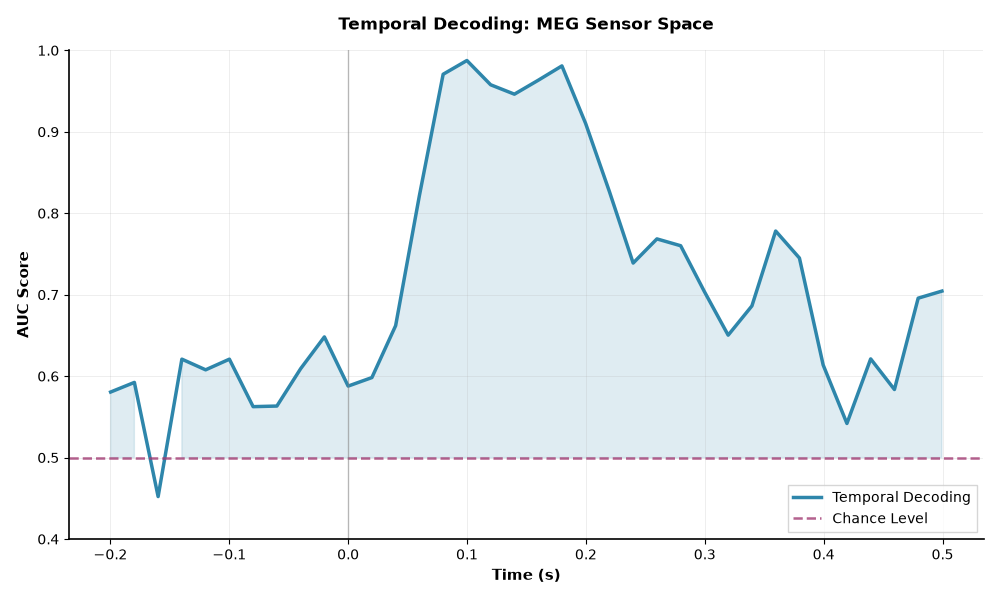
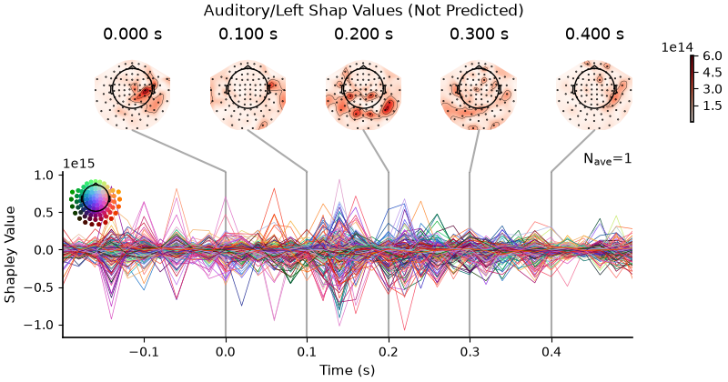
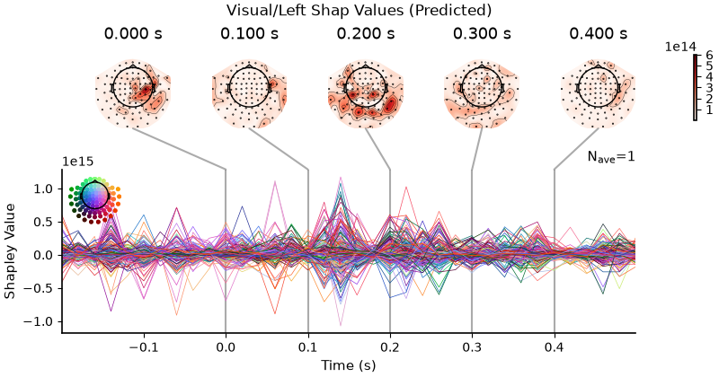
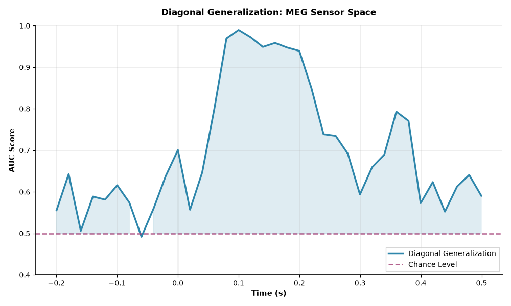
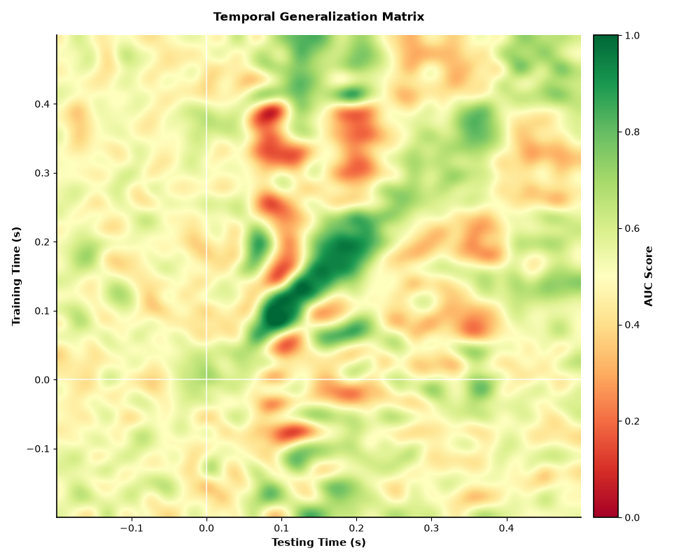

Note
Go to the end to download the full example code.
Temporal generalization with Braindecode#
In this tutorial, we will show you how to use the Braindecode library to decode EEG data over time. The problem of decoding EEG data over time is formulated as fitting a multivariate predictive model on each time point of the signal and then evaluating the performance of the model at the same time point in new epoched data. Specifically, given a pair of features \(X\) and targets \(y\), where \(X\) has more than \(2\) dimensions, we want to fit a model \(f\) to \(X\) and \(y\) and evaluate the performance of \(f\) on a new pair of features \(X'\) and targets \(y'\). Typically, \(X\) is in the shape of \(n_{\text{epochs}} \times n_{\text{channels}} \times n_{\text{time}}\) and \(y\) is in the shape of \(n_{\text{epochs}} \times n_{\text{classes}}\). This tutorial is based on the MNE tutorial: https://mne.tools/stable/auto_tutorials/machine-learning/50_decoding.html#temporal-decoding.
For more information on the problem of temporal generalization, visit MNE [1]. For papers describing this method, see [2] and [3].
Loading and preprocessing the data#
We will load in the same exact MEG dataset as used in the MNE tutorial [1] and preprocess it identically.
import matplotlib.pyplot as plt
import mne
import numpy as np
import shap
import torch
import torch.nn as nn
from mne.datasets import sample
from mne.decoding import (
GeneralizingEstimator,
SlidingEstimator,
cross_val_multiscore,
)
from sklearn.preprocessing import LabelEncoder
from skorch.callbacks import LRScheduler
from torch.optim import AdamW
from braindecode import EEGClassifier
# Configure matplotlib for publication-quality plots
plt.rcParams["figure.figsize"] = (10, 6)
plt.rcParams["font.size"] = 11
plt.rcParams["font.family"] = "sans-serif"
plt.rcParams["axes.linewidth"] = 1.2
plt.rcParams["grid.linewidth"] = 0.8
plt.rcParams["xtick.labelsize"] = 10
plt.rcParams["ytick.labelsize"] = 10
plt.rcParams["axes.labelsize"] = 11
plt.rcParams["legend.fontsize"] = 10
plt.rcParams["figure.titlesize"] = 12
plt.rcParams["axes.spines.left"] = True
plt.rcParams["axes.spines.bottom"] = True
plt.rcParams["axes.spines.top"] = False
plt.rcParams["axes.spines.right"] = False
plt.rcParams["grid.alpha"] = 0.3
device = "cuda" if torch.cuda.is_available() else "cpu"
data_path = sample.data_path()
subjects_dir = data_path / "subjects"
meg_path = data_path / "MEG" / "sample"
raw_fname = meg_path / "sample_audvis_filt-0-40_raw.fif"
tmin, tmax = -0.200, 0.500
event_id = {"Auditory/Left": 1, "Visual/Left": 3} # just use two
raw = mne.io.read_raw_fif(raw_fname)
raw.pick(picks=["grad", "stim", "eog"])
# The subsequent decoding analyses only capture evoked responses, so we can
# low-pass the MEG data. Usually a value more like 40 Hz would be used,
# but here low-pass at 20 so we can more heavily decimate, and allow
# the example to run faster. The 2 Hz high-pass helps improve CSP.
raw.load_data().filter(2, 20)
events = mne.find_events(raw, "STI 014")
# Set up bad channels (modify to your needs)
raw.info["bads"] += ["MEG 2443"] # bads + 2 more
# Read epochs
epochs = mne.Epochs(
raw,
events,
event_id,
tmin,
tmax,
proj=True,
picks=("grad", "eog"),
baseline=(None, 0.0),
preload=True,
reject=dict(grad=4000e-13, eog=150e-6),
decim=3,
verbose="error",
)
epochs.pick(picks="meg", exclude="bads") # remove stim and EOG
del raw
# MEG signals: n_epochs, n_meg_channels, n_times
# Use fT/cm units instead of SI (T/m) so that BatchNorm1d's eps (~1e-5)
# does not dominate the tiny SI-unit variance (~1e-23).
X = epochs.get_data(units="fT/cm")
y = epochs.events[:, 2] # target: auditory left vs visual left
y_encod = LabelEncoder().fit_transform(y)
print("X shape: ", X.shape, "Y shape: ", y.shape, "Y encode shape: ", y_encod.shape)
n_classes = len(np.unique(y))
classes = list(range(n_classes))
# Extract number of chans and time steps from dataset
n_chans = X.shape[1]
n_times = X.shape[2]
print(n_classes, classes, n_chans, n_times)
Fetching 1 file for the sample dataset ...
0%| | 0.00/1.65G [00:00<?, ?B/s]
0%| | 49.2k/1.65G [00:00<1:28:42, 311kB/s]
0%| | 131k/1.65G [00:00<50:27, 546kB/s]
0%| | 295k/1.65G [00:00<28:04, 981kB/s]
0%| | 705k/1.65G [00:00<13:05, 2.10MB/s]
0%| | 1.85M/1.65G [00:00<05:12, 5.29MB/s]
0%| | 4.78M/1.65G [00:00<02:05, 13.2MB/s]
1%|▏ | 8.59M/1.65G [00:00<01:17, 21.1MB/s]
1%|▎ | 12.4M/1.65G [00:00<01:01, 26.5MB/s]
1%|▎ | 16.3M/1.65G [00:00<00:54, 30.2MB/s]
1%|▍ | 20.1M/1.65G [00:01<00:49, 32.7MB/s]
1%|▌ | 24.1M/1.65G [00:01<00:46, 34.9MB/s]
2%|▋ | 28.0M/1.65G [00:01<00:44, 36.1MB/s]
2%|▋ | 32.0M/1.65G [00:01<00:43, 37.2MB/s]
2%|▊ | 35.9M/1.65G [00:01<00:42, 37.9MB/s]
2%|▉ | 39.8M/1.65G [00:01<00:42, 38.2MB/s]
3%|▉ | 43.7M/1.65G [00:01<00:41, 38.4MB/s]
3%|█ | 47.6M/1.65G [00:01<00:41, 38.6MB/s]
3%|█▏ | 51.5M/1.65G [00:01<00:41, 38.3MB/s]
3%|█▏ | 55.4M/1.65G [00:01<00:41, 38.5MB/s]
4%|█▎ | 59.3M/1.65G [00:02<00:41, 38.6MB/s]
4%|█▍ | 63.2M/1.65G [00:02<00:40, 38.8MB/s]
4%|█▌ | 67.2M/1.65G [00:02<00:40, 39.1MB/s]
4%|█▌ | 71.1M/1.65G [00:02<00:40, 39.2MB/s]
5%|█▋ | 75.1M/1.65G [00:02<00:40, 39.2MB/s]
5%|█▊ | 79.0M/1.65G [00:02<00:40, 39.2MB/s]
5%|█▊ | 83.0M/1.65G [00:02<00:39, 39.5MB/s]
5%|█▉ | 86.9M/1.65G [00:02<00:39, 39.3MB/s]
6%|██ | 90.9M/1.65G [00:02<00:39, 39.4MB/s]
6%|██ | 94.8M/1.65G [00:02<00:39, 39.2MB/s]
6%|██▏ | 98.8M/1.65G [00:03<00:39, 39.2MB/s]
6%|██▎ | 103M/1.65G [00:03<00:39, 39.2MB/s]
6%|██▍ | 107M/1.65G [00:03<00:39, 39.0MB/s]
7%|██▌ | 111M/1.65G [00:03<00:39, 39.1MB/s]
7%|██▋ | 115M/1.65G [00:03<00:39, 39.3MB/s]
7%|██▋ | 118M/1.65G [00:03<00:39, 39.3MB/s]
7%|██▊ | 122M/1.65G [00:03<00:38, 39.3MB/s]
8%|██▉ | 126M/1.65G [00:03<00:38, 39.2MB/s]
8%|██▉ | 130M/1.65G [00:03<00:38, 39.2MB/s]
8%|███ | 134M/1.65G [00:03<00:38, 39.2MB/s]
8%|███▏ | 138M/1.65G [00:04<00:38, 39.3MB/s]
9%|███▎ | 142M/1.65G [00:04<00:38, 39.1MB/s]
9%|███▎ | 146M/1.65G [00:04<00:38, 39.1MB/s]
9%|███▍ | 150M/1.65G [00:04<00:38, 39.1MB/s]
9%|███▌ | 154M/1.65G [00:04<00:38, 39.1MB/s]
10%|███▋ | 158M/1.65G [00:04<00:38, 39.1MB/s]
10%|███▋ | 162M/1.65G [00:04<00:38, 39.0MB/s]
10%|███▊ | 166M/1.65G [00:04<00:38, 39.1MB/s]
10%|███▉ | 169M/1.65G [00:04<00:37, 39.1MB/s]
10%|███▉ | 173M/1.65G [00:04<00:37, 39.1MB/s]
11%|████ | 177M/1.65G [00:05<00:37, 39.1MB/s]
11%|████▏ | 181M/1.65G [00:05<00:37, 39.1MB/s]
11%|████▎ | 185M/1.65G [00:05<00:37, 39.1MB/s]
11%|████▎ | 189M/1.65G [00:05<00:37, 39.2MB/s]
12%|████▍ | 193M/1.65G [00:05<00:37, 39.2MB/s]
12%|████▌ | 197M/1.65G [00:05<00:40, 36.4MB/s]
12%|████▌ | 201M/1.65G [00:05<00:43, 33.1MB/s]
12%|████▋ | 205M/1.65G [00:05<00:41, 34.6MB/s]
13%|████▊ | 208M/1.65G [00:05<00:40, 35.6MB/s]
13%|████▉ | 212M/1.65G [00:06<00:39, 36.5MB/s]
13%|████▉ | 216M/1.65G [00:06<00:38, 37.1MB/s]
13%|█████ | 220M/1.65G [00:06<00:38, 37.6MB/s]
14%|█████▏ | 224M/1.65G [00:06<00:37, 38.0MB/s]
14%|█████▏ | 228M/1.65G [00:06<00:37, 38.1MB/s]
14%|█████▎ | 232M/1.65G [00:06<00:37, 38.0MB/s]
14%|█████▍ | 235M/1.65G [00:06<00:37, 38.3MB/s]
14%|█████▌ | 239M/1.65G [00:06<00:36, 38.4MB/s]
15%|█████▌ | 243M/1.65G [00:06<00:36, 38.4MB/s]
15%|█████▋ | 247M/1.65G [00:06<00:36, 38.4MB/s]
15%|█████▊ | 251M/1.65G [00:07<00:36, 38.5MB/s]
15%|█████▊ | 255M/1.65G [00:07<00:36, 38.7MB/s]
16%|█████▉ | 259M/1.65G [00:07<00:35, 38.8MB/s]
16%|██████ | 263M/1.65G [00:07<00:35, 38.7MB/s]
16%|██████▏ | 266M/1.65G [00:07<00:35, 38.7MB/s]
16%|██████▏ | 270M/1.65G [00:07<00:35, 38.7MB/s]
17%|██████▎ | 274M/1.65G [00:07<00:35, 38.7MB/s]
17%|██████▍ | 278M/1.65G [00:07<00:35, 38.7MB/s]
17%|██████▍ | 282M/1.65G [00:07<00:35, 38.8MB/s]
17%|██████▌ | 286M/1.65G [00:07<00:35, 38.6MB/s]
18%|██████▋ | 290M/1.65G [00:08<00:35, 38.6MB/s]
18%|██████▋ | 294M/1.65G [00:08<00:35, 38.6MB/s]
18%|██████▊ | 297M/1.65G [00:08<00:34, 38.7MB/s]
18%|██████▉ | 301M/1.65G [00:08<00:34, 38.6MB/s]
18%|███████ | 305M/1.65G [00:08<00:34, 38.7MB/s]
19%|███████ | 309M/1.65G [00:08<00:34, 38.7MB/s]
19%|███████▏ | 313M/1.65G [00:08<00:34, 38.7MB/s]
19%|███████▎ | 317M/1.65G [00:09<01:20, 16.6MB/s]
19%|███████▎ | 321M/1.65G [00:09<01:06, 20.0MB/s]
20%|███████▍ | 325M/1.65G [00:09<00:57, 23.3MB/s]
20%|███████▌ | 328M/1.65G [00:09<00:49, 26.6MB/s]
20%|███████▋ | 332M/1.65G [00:09<00:44, 29.5MB/s]
20%|███████▋ | 336M/1.65G [00:09<00:41, 31.9MB/s]
21%|███████▊ | 340M/1.65G [00:09<00:38, 33.8MB/s]
21%|███████▉ | 344M/1.65G [00:09<00:37, 35.3MB/s]
21%|████████ | 348M/1.65G [00:09<00:35, 36.4MB/s]
21%|████████ | 352M/1.65G [00:10<00:35, 37.2MB/s]
22%|████████▏ | 356M/1.65G [00:10<00:34, 37.8MB/s]
22%|████████▎ | 360M/1.65G [00:10<00:33, 38.2MB/s]
22%|████████▎ | 364M/1.65G [00:10<00:33, 38.4MB/s]
22%|████████▍ | 368M/1.65G [00:10<00:33, 38.6MB/s]
22%|████████▌ | 372M/1.65G [00:10<00:33, 38.7MB/s]
23%|████████▋ | 375M/1.65G [00:10<00:32, 38.8MB/s]
23%|████████▋ | 379M/1.65G [00:10<00:32, 38.9MB/s]
23%|████████▊ | 383M/1.65G [00:10<00:32, 39.0MB/s]
23%|████████▉ | 387M/1.65G [00:10<00:32, 39.0MB/s]
24%|████████▉ | 391M/1.65G [00:11<00:32, 39.1MB/s]
24%|█████████ | 395M/1.65G [00:11<00:32, 39.1MB/s]
24%|█████████▏ | 399M/1.65G [00:11<00:32, 39.1MB/s]
24%|█████████▎ | 403M/1.65G [00:11<00:34, 36.6MB/s]
25%|█████████▎ | 407M/1.65G [00:11<00:33, 37.1MB/s]
25%|█████████▍ | 411M/1.65G [00:11<00:33, 37.6MB/s]
25%|█████████▌ | 415M/1.65G [00:11<00:32, 38.0MB/s]
25%|█████████▌ | 418M/1.65G [00:11<00:32, 38.4MB/s]
26%|█████████▋ | 422M/1.65G [00:11<00:31, 38.6MB/s]
26%|█████████▊ | 426M/1.65G [00:12<00:34, 35.5MB/s]
26%|█████████▉ | 430M/1.65G [00:12<00:37, 32.8MB/s]
26%|█████████▉ | 434M/1.65G [00:12<00:35, 34.4MB/s]
26%|██████████ | 438M/1.65G [00:12<00:34, 35.5MB/s]
27%|██████████▏ | 441M/1.65G [00:12<00:33, 36.4MB/s]
27%|██████████▏ | 445M/1.65G [00:12<00:32, 37.1MB/s]
27%|██████████▎ | 449M/1.65G [00:12<00:31, 37.6MB/s]
27%|██████████▍ | 453M/1.65G [00:12<00:31, 38.0MB/s]
28%|██████████▌ | 457M/1.65G [00:12<00:31, 38.2MB/s]
28%|██████████▌ | 461M/1.65G [00:12<00:30, 38.5MB/s]
28%|██████████▋ | 465M/1.65G [00:13<00:30, 39.0MB/s]
28%|██████████▊ | 469M/1.65G [00:13<00:30, 39.2MB/s]
29%|██████████▊ | 473M/1.65G [00:13<00:30, 39.3MB/s]
29%|██████████▉ | 477M/1.65G [00:13<00:29, 39.4MB/s]
29%|███████████ | 481M/1.65G [00:13<00:29, 39.4MB/s]
29%|███████████▏ | 485M/1.65G [00:13<00:29, 39.4MB/s]
30%|███████████▏ | 489M/1.65G [00:13<00:29, 39.3MB/s]
30%|███████████▎ | 493M/1.65G [00:13<00:29, 39.4MB/s]
30%|███████████▍ | 497M/1.65G [00:13<00:29, 39.4MB/s]
30%|███████████▌ | 500M/1.65G [00:13<00:29, 39.3MB/s]
31%|███████████▌ | 504M/1.65G [00:14<00:29, 39.5MB/s]
31%|███████████▋ | 508M/1.65G [00:14<00:29, 39.3MB/s]
31%|███████████▊ | 512M/1.65G [00:14<00:28, 39.5MB/s]
31%|███████████▊ | 516M/1.65G [00:14<00:28, 39.5MB/s]
31%|███████████▉ | 520M/1.65G [00:14<00:28, 39.6MB/s]
32%|████████████ | 524M/1.65G [00:14<00:28, 39.6MB/s]
32%|████████████▏ | 528M/1.65G [00:14<00:28, 39.6MB/s]
32%|████████████▏ | 532M/1.65G [00:14<00:28, 39.7MB/s]
32%|████████████▎ | 536M/1.65G [00:14<00:28, 39.7MB/s]
33%|████████████▍ | 540M/1.65G [00:14<00:28, 39.6MB/s]
33%|████████████▌ | 544M/1.65G [00:15<00:28, 39.6MB/s]
33%|████████████▌ | 548M/1.65G [00:15<00:27, 39.5MB/s]
33%|████████████▋ | 552M/1.65G [00:15<00:27, 39.4MB/s]
34%|████████████▊ | 556M/1.65G [00:15<00:27, 39.4MB/s]
34%|████████████▊ | 560M/1.65G [00:15<00:27, 39.4MB/s]
34%|████████████▉ | 564M/1.65G [00:15<00:27, 39.3MB/s]
34%|█████████████ | 568M/1.65G [00:15<00:27, 39.3MB/s]
35%|█████████████▏ | 572M/1.65G [00:15<00:27, 39.3MB/s]
35%|█████████████▏ | 576M/1.65G [00:15<00:27, 39.1MB/s]
35%|█████████████▎ | 580M/1.65G [00:15<00:27, 39.1MB/s]
35%|█████████████▍ | 584M/1.65G [00:16<00:27, 39.2MB/s]
36%|█████████████▌ | 587M/1.65G [00:16<00:27, 39.1MB/s]
36%|█████████████▌ | 591M/1.65G [00:16<00:27, 39.2MB/s]
36%|█████████████▋ | 595M/1.65G [00:16<00:27, 39.1MB/s]
36%|█████████████▊ | 599M/1.65G [00:16<00:26, 39.1MB/s]
36%|█████████████▊ | 603M/1.65G [00:16<00:26, 39.0MB/s]
37%|█████████████▉ | 607M/1.65G [00:16<00:26, 39.0MB/s]
37%|██████████████ | 611M/1.65G [00:16<00:26, 39.3MB/s]
37%|██████████████▏ | 615M/1.65G [00:16<00:26, 39.2MB/s]
37%|██████████████▏ | 619M/1.65G [00:16<00:26, 39.1MB/s]
38%|██████████████▎ | 623M/1.65G [00:17<00:26, 39.2MB/s]
38%|██████████████▍ | 627M/1.65G [00:17<00:27, 37.4MB/s]
38%|██████████████▍ | 631M/1.65G [00:17<00:26, 37.9MB/s]
38%|██████████████▌ | 635M/1.65G [00:17<00:26, 38.2MB/s]
39%|██████████████▋ | 638M/1.65G [00:17<00:26, 38.5MB/s]
39%|██████████████▊ | 642M/1.65G [00:17<00:26, 38.3MB/s]
39%|██████████████▊ | 646M/1.65G [00:17<00:26, 38.3MB/s]
39%|██████████████▉ | 650M/1.65G [00:17<00:26, 38.3MB/s]
40%|███████████████ | 654M/1.65G [00:17<00:26, 38.3MB/s]
40%|███████████████ | 658M/1.65G [00:18<00:25, 38.3MB/s]
40%|███████████████▏ | 661M/1.65G [00:18<00:25, 38.3MB/s]
40%|███████████████▎ | 665M/1.65G [00:18<00:25, 38.4MB/s]
40%|███████████████▍ | 669M/1.65G [00:18<00:25, 38.6MB/s]
41%|███████████████▍ | 673M/1.65G [00:18<00:25, 38.7MB/s]
41%|███████████████▌ | 677M/1.65G [00:18<00:25, 38.7MB/s]
41%|███████████████▋ | 681M/1.65G [00:18<00:25, 38.7MB/s]
41%|███████████████▋ | 685M/1.65G [00:18<00:25, 38.6MB/s]
42%|███████████████▊ | 689M/1.65G [00:18<00:24, 38.7MB/s]
42%|███████████████▉ | 693M/1.65G [00:18<00:24, 38.6MB/s]
42%|████████████████ | 696M/1.65G [00:19<00:24, 38.6MB/s]
42%|████████████████ | 700M/1.65G [00:19<00:24, 38.7MB/s]
43%|████████████████▏ | 704M/1.65G [00:19<00:24, 38.8MB/s]
43%|████████████████▎ | 708M/1.65G [00:19<00:24, 38.8MB/s]
43%|████████████████▎ | 712M/1.65G [00:19<00:29, 32.4MB/s]
43%|████████████████▍ | 716M/1.65G [00:19<00:27, 34.2MB/s]
44%|████████████████▌ | 720M/1.65G [00:19<00:26, 35.2MB/s]
44%|████████████████▋ | 724M/1.65G [00:19<00:25, 36.2MB/s]
44%|████████████████▋ | 727M/1.65G [00:19<00:25, 36.4MB/s]
44%|████████████████▊ | 731M/1.65G [00:19<00:24, 37.2MB/s]
44%|████████████████▉ | 735M/1.65G [00:20<00:24, 38.0MB/s]
45%|████████████████▉ | 739M/1.65G [00:20<00:23, 38.4MB/s]
45%|█████████████████ | 743M/1.65G [00:20<00:23, 38.8MB/s]
45%|█████████████████▏ | 747M/1.65G [00:20<00:23, 39.1MB/s]
45%|█████████████████▎ | 751M/1.65G [00:20<00:22, 39.3MB/s]
46%|█████████████████▎ | 755M/1.65G [00:20<00:22, 39.4MB/s]
46%|█████████████████▍ | 759M/1.65G [00:20<00:22, 39.5MB/s]
46%|█████████████████▌ | 763M/1.65G [00:20<00:22, 39.5MB/s]
46%|█████████████████▋ | 767M/1.65G [00:20<00:22, 39.6MB/s]
47%|█████████████████▋ | 771M/1.65G [00:20<00:22, 39.5MB/s]
47%|█████████████████▊ | 775M/1.65G [00:21<00:22, 39.5MB/s]
47%|█████████████████▉ | 779M/1.65G [00:21<00:22, 39.6MB/s]
47%|█████████████████▉ | 783M/1.65G [00:21<00:21, 39.7MB/s]
48%|██████████████████ | 787M/1.65G [00:21<00:21, 39.9MB/s]
48%|██████████████████▏ | 791M/1.65G [00:21<00:21, 39.8MB/s]
48%|██████████████████▎ | 795M/1.65G [00:21<00:21, 40.0MB/s]
48%|██████████████████▎ | 799M/1.65G [00:21<00:21, 40.0MB/s]
49%|██████████████████▍ | 803M/1.65G [00:21<00:21, 40.1MB/s]
49%|██████████████████▌ | 807M/1.65G [00:21<00:21, 40.1MB/s]
49%|██████████████████▋ | 811M/1.65G [00:21<00:21, 39.9MB/s]
49%|██████████████████▋ | 815M/1.65G [00:22<00:20, 39.9MB/s]
50%|██████████████████▊ | 819M/1.65G [00:22<00:20, 39.9MB/s]
50%|██████████████████▉ | 823M/1.65G [00:22<00:20, 39.7MB/s]
50%|███████████████████ | 827M/1.65G [00:22<00:20, 39.8MB/s]
50%|███████████████████ | 831M/1.65G [00:22<00:20, 39.7MB/s]
51%|███████████████████▏ | 835M/1.65G [00:22<00:20, 39.8MB/s]
51%|███████████████████▎ | 839M/1.65G [00:22<00:20, 39.8MB/s]
51%|███████████████████▍ | 843M/1.65G [00:22<00:20, 39.8MB/s]
51%|███████████████████▍ | 847M/1.65G [00:22<00:20, 39.7MB/s]
51%|███████████████████▌ | 851M/1.65G [00:22<00:20, 39.7MB/s]
52%|███████████████████▋ | 855M/1.65G [00:23<00:20, 39.7MB/s]
52%|███████████████████▋ | 859M/1.65G [00:23<00:20, 39.7MB/s]
52%|███████████████████▊ | 863M/1.65G [00:23<00:19, 39.7MB/s]
52%|███████████████████▉ | 867M/1.65G [00:23<00:19, 39.7MB/s]
53%|████████████████████ | 871M/1.65G [00:23<00:19, 39.9MB/s]
53%|████████████████████ | 875M/1.65G [00:23<00:19, 39.9MB/s]
53%|████████████████████▏ | 879M/1.65G [00:23<00:19, 39.9MB/s]
53%|████████████████████▎ | 883M/1.65G [00:23<00:19, 39.8MB/s]
54%|████████████████████▍ | 887M/1.65G [00:23<00:19, 39.7MB/s]
54%|████████████████████▍ | 891M/1.65G [00:23<00:19, 39.6MB/s]
54%|████████████████████▌ | 895M/1.65G [00:24<00:19, 39.7MB/s]
54%|████████████████████▋ | 899M/1.65G [00:24<00:19, 39.5MB/s]
55%|████████████████████▊ | 903M/1.65G [00:24<00:19, 39.5MB/s]
55%|████████████████████▊ | 907M/1.65G [00:24<00:18, 39.3MB/s]
55%|████████████████████▉ | 910M/1.65G [00:24<00:18, 39.2MB/s]
55%|█████████████████████ | 914M/1.65G [00:24<00:18, 39.3MB/s]
56%|█████████████████████ | 918M/1.65G [00:24<00:18, 39.2MB/s]
56%|█████████████████████▏ | 922M/1.65G [00:24<00:18, 39.3MB/s]
56%|█████████████████████▎ | 926M/1.65G [00:24<00:18, 38.7MB/s]
56%|█████████████████████▍ | 930M/1.65G [00:24<00:18, 38.9MB/s]
57%|█████████████████████▍ | 934M/1.65G [00:25<00:18, 39.0MB/s]
57%|█████████████████████▌ | 938M/1.65G [00:25<00:18, 39.1MB/s]
57%|█████████████████████▋ | 942M/1.65G [00:25<00:18, 39.1MB/s]
57%|█████████████████████▊ | 946M/1.65G [00:25<00:17, 39.7MB/s]
57%|█████████████████████▊ | 950M/1.65G [00:25<00:17, 40.5MB/s]
58%|█████████████████████▉ | 954M/1.65G [00:25<00:17, 41.0MB/s]
58%|██████████████████████ | 959M/1.65G [00:25<00:16, 41.5MB/s]
58%|██████████████████████▏ | 963M/1.65G [00:25<00:16, 41.6MB/s]
59%|██████████████████████▏ | 967M/1.65G [00:25<00:16, 41.8MB/s]
59%|██████████████████████▎ | 971M/1.65G [00:25<00:16, 41.9MB/s]
59%|██████████████████████▍ | 976M/1.65G [00:26<00:16, 42.1MB/s]
59%|██████████████████████▌ | 980M/1.65G [00:26<00:15, 42.1MB/s]
60%|██████████████████████▋ | 984M/1.65G [00:26<00:15, 42.1MB/s]
60%|██████████████████████▋ | 988M/1.65G [00:26<00:15, 42.2MB/s]
60%|██████████████████████▊ | 993M/1.65G [00:26<00:15, 42.2MB/s]
60%|██████████████████████▉ | 997M/1.65G [00:26<00:15, 42.2MB/s]
61%|██████████████████████▍ | 1.00G/1.65G [00:26<00:15, 42.1MB/s]
61%|██████████████████████▌ | 1.01G/1.65G [00:26<00:15, 42.1MB/s]
61%|██████████████████████▌ | 1.01G/1.65G [00:26<00:15, 41.9MB/s]
61%|██████████████████████▋ | 1.01G/1.65G [00:27<00:15, 41.7MB/s]
62%|██████████████████████▊ | 1.02G/1.65G [00:27<00:15, 41.8MB/s]
62%|██████████████████████▉ | 1.02G/1.65G [00:27<00:15, 41.8MB/s]
62%|██████████████████████▉ | 1.03G/1.65G [00:27<00:14, 41.9MB/s]
62%|███████████████████████ | 1.03G/1.65G [00:27<00:14, 41.8MB/s]
63%|███████████████████████▏ | 1.03G/1.65G [00:27<00:14, 42.1MB/s]
63%|███████████████████████▎ | 1.04G/1.65G [00:27<00:14, 42.2MB/s]
63%|███████████████████████▎ | 1.04G/1.65G [00:27<00:14, 42.1MB/s]
63%|███████████████████████▍ | 1.05G/1.65G [00:27<00:14, 42.2MB/s]
64%|███████████████████████▌ | 1.05G/1.65G [00:27<00:14, 42.1MB/s]
64%|███████████████████████▋ | 1.06G/1.65G [00:28<00:14, 42.0MB/s]
64%|███████████████████████▋ | 1.06G/1.65G [00:28<00:14, 40.9MB/s]
64%|███████████████████████▊ | 1.06G/1.65G [00:28<00:14, 40.6MB/s]
65%|███████████████████████▉ | 1.07G/1.65G [00:28<00:14, 40.3MB/s]
65%|████████████████████████ | 1.07G/1.65G [00:28<00:14, 40.1MB/s]
65%|████████████████████████ | 1.08G/1.65G [00:28<00:14, 39.9MB/s]
65%|████████████████████████▏ | 1.08G/1.65G [00:28<00:14, 39.8MB/s]
66%|████████████████████████▎ | 1.08G/1.65G [00:28<00:14, 39.6MB/s]
66%|████████████████████████▎ | 1.09G/1.65G [00:28<00:14, 39.6MB/s]
66%|████████████████████████▍ | 1.09G/1.65G [00:28<00:14, 39.4MB/s]
66%|████████████████████████▌ | 1.10G/1.65G [00:29<00:14, 39.1MB/s]
67%|████████████████████████▌ | 1.10G/1.65G [00:29<00:14, 39.2MB/s]
67%|████████████████████████▋ | 1.10G/1.65G [00:29<00:14, 39.0MB/s]
67%|████████████████████████▊ | 1.11G/1.65G [00:29<00:13, 39.0MB/s]
67%|████████████████████████▉ | 1.11G/1.65G [00:29<00:13, 38.9MB/s]
67%|████████████████████████▉ | 1.12G/1.65G [00:29<00:13, 38.9MB/s]
68%|█████████████████████████ | 1.12G/1.65G [00:29<00:13, 38.9MB/s]
68%|█████████████████████████▏ | 1.12G/1.65G [00:29<00:13, 38.9MB/s]
68%|█████████████████████████▏ | 1.13G/1.65G [00:29<00:13, 38.6MB/s]
68%|█████████████████████████▎ | 1.13G/1.65G [00:29<00:13, 38.8MB/s]
69%|█████████████████████████▍ | 1.14G/1.65G [00:30<00:13, 39.3MB/s]
69%|█████████████████████████▌ | 1.14G/1.65G [00:30<00:12, 40.1MB/s]
69%|█████████████████████████▌ | 1.14G/1.65G [00:30<00:12, 39.7MB/s]
69%|█████████████████████████▋ | 1.15G/1.65G [00:30<00:12, 39.8MB/s]
70%|█████████████████████████▊ | 1.15G/1.65G [00:30<00:12, 40.6MB/s]
70%|█████████████████████████▊ | 1.16G/1.65G [00:30<00:12, 39.6MB/s]
70%|█████████████████████████▉ | 1.16G/1.65G [00:30<00:12, 39.4MB/s]
70%|██████████████████████████ | 1.16G/1.65G [00:30<00:12, 39.2MB/s]
71%|██████████████████████████▏ | 1.17G/1.65G [00:30<00:12, 39.1MB/s]
71%|██████████████████████████▏ | 1.17G/1.65G [00:30<00:12, 39.1MB/s]
71%|██████████████████████████▎ | 1.18G/1.65G [00:31<00:12, 38.9MB/s]
71%|██████████████████████████▍ | 1.18G/1.65G [00:31<00:12, 39.0MB/s]
72%|██████████████████████████▍ | 1.18G/1.65G [00:31<00:12, 39.1MB/s]
72%|██████████████████████████▌ | 1.19G/1.65G [00:31<00:11, 39.1MB/s]
72%|██████████████████████████▋ | 1.19G/1.65G [00:31<00:11, 39.1MB/s]
72%|██████████████████████████▊ | 1.19G/1.65G [00:31<00:11, 39.1MB/s]
73%|██████████████████████████▊ | 1.20G/1.65G [00:31<00:12, 37.2MB/s]
73%|██████████████████████████▉ | 1.20G/1.65G [00:31<00:13, 33.7MB/s]
73%|███████████████████████████ | 1.21G/1.65G [00:31<00:12, 35.0MB/s]
73%|███████████████████████████ | 1.21G/1.65G [00:32<00:12, 36.0MB/s]
73%|███████████████████████████▏ | 1.21G/1.65G [00:32<00:11, 36.8MB/s]
74%|███████████████████████████▎ | 1.22G/1.65G [00:32<00:11, 37.4MB/s]
74%|███████████████████████████▎ | 1.22G/1.65G [00:32<00:11, 37.9MB/s]
74%|███████████████████████████▍ | 1.23G/1.65G [00:32<00:11, 38.2MB/s]
74%|███████████████████████████▌ | 1.23G/1.65G [00:32<00:11, 38.4MB/s]
75%|███████████████████████████▌ | 1.23G/1.65G [00:32<00:10, 38.5MB/s]
75%|███████████████████████████▋ | 1.24G/1.65G [00:32<00:10, 38.6MB/s]
75%|███████████████████████████▊ | 1.24G/1.65G [00:32<00:10, 38.6MB/s]
75%|███████████████████████████▉ | 1.25G/1.65G [00:32<00:10, 38.7MB/s]
76%|███████████████████████████▉ | 1.25G/1.65G [00:33<00:10, 38.6MB/s]
76%|████████████████████████████ | 1.25G/1.65G [00:33<00:10, 38.7MB/s]
76%|████████████████████████████▏ | 1.26G/1.65G [00:33<00:10, 38.8MB/s]
76%|████████████████████████████▏ | 1.26G/1.65G [00:33<00:10, 38.9MB/s]
77%|████████████████████████████▎ | 1.26G/1.65G [00:33<00:09, 38.8MB/s]
77%|████████████████████████████▍ | 1.27G/1.65G [00:33<00:09, 39.0MB/s]
77%|████████████████████████████▍ | 1.27G/1.65G [00:33<00:09, 39.0MB/s]
77%|████████████████████████████▌ | 1.28G/1.65G [00:33<00:09, 39.0MB/s]
77%|████████████████████████████▋ | 1.28G/1.65G [00:33<00:09, 38.9MB/s]
78%|████████████████████████████▊ | 1.28G/1.65G [00:33<00:09, 39.0MB/s]
78%|████████████████████████████▊ | 1.29G/1.65G [00:34<00:09, 38.9MB/s]
78%|████████████████████████████▉ | 1.29G/1.65G [00:34<00:09, 38.9MB/s]
78%|█████████████████████████████ | 1.30G/1.65G [00:34<00:09, 38.4MB/s]
79%|█████████████████████████████ | 1.30G/1.65G [00:34<00:09, 38.6MB/s]
79%|█████████████████████████████▏ | 1.30G/1.65G [00:34<00:08, 38.8MB/s]
79%|█████████████████████████████▎ | 1.31G/1.65G [00:34<00:08, 38.9MB/s]
79%|█████████████████████████████▎ | 1.31G/1.65G [00:34<00:08, 39.1MB/s]
80%|█████████████████████████████▍ | 1.32G/1.65G [00:34<00:08, 39.0MB/s]
80%|█████████████████████████████▌ | 1.32G/1.65G [00:34<00:08, 39.0MB/s]
80%|█████████████████████████████▋ | 1.32G/1.65G [00:34<00:08, 38.9MB/s]
80%|█████████████████████████████▋ | 1.33G/1.65G [00:35<00:08, 38.9MB/s]
81%|█████████████████████████████▊ | 1.33G/1.65G [00:35<00:08, 39.0MB/s]
81%|█████████████████████████████▉ | 1.34G/1.65G [00:35<00:08, 39.1MB/s]
81%|█████████████████████████████▉ | 1.34G/1.65G [00:35<00:08, 39.2MB/s]
81%|██████████████████████████████ | 1.34G/1.65G [00:35<00:07, 39.2MB/s]
81%|██████████████████████████████▏ | 1.35G/1.65G [00:35<00:07, 39.2MB/s]
82%|██████████████████████████████▏ | 1.35G/1.65G [00:35<00:07, 39.3MB/s]
82%|██████████████████████████████▎ | 1.35G/1.65G [00:35<00:07, 39.1MB/s]
82%|██████████████████████████████▍ | 1.36G/1.65G [00:35<00:07, 39.2MB/s]
82%|██████████████████████████████▌ | 1.36G/1.65G [00:35<00:07, 39.2MB/s]
83%|██████████████████████████████▌ | 1.37G/1.65G [00:36<00:07, 39.3MB/s]
83%|██████████████████████████████▋ | 1.37G/1.65G [00:36<00:07, 39.1MB/s]
83%|██████████████████████████████▊ | 1.37G/1.65G [00:36<00:07, 39.2MB/s]
83%|██████████████████████████████▊ | 1.38G/1.65G [00:36<00:07, 39.1MB/s]
84%|██████████████████████████████▉ | 1.38G/1.65G [00:36<00:06, 39.2MB/s]
84%|███████████████████████████████ | 1.39G/1.65G [00:36<00:06, 39.2MB/s]
84%|███████████████████████████████ | 1.39G/1.65G [00:36<00:06, 38.8MB/s]
84%|███████████████████████████████▏ | 1.39G/1.65G [00:36<00:06, 38.5MB/s]
85%|███████████████████████████████▎ | 1.40G/1.65G [00:36<00:06, 38.7MB/s]
85%|███████████████████████████████▍ | 1.40G/1.65G [00:36<00:06, 38.9MB/s]
85%|███████████████████████████████▍ | 1.41G/1.65G [00:37<00:06, 38.9MB/s]
85%|███████████████████████████████▌ | 1.41G/1.65G [00:37<00:06, 38.9MB/s]
86%|███████████████████████████████▋ | 1.41G/1.65G [00:37<00:06, 38.7MB/s]
86%|███████████████████████████████▋ | 1.42G/1.65G [00:37<00:06, 38.8MB/s]
86%|███████████████████████████████▊ | 1.42G/1.65G [00:37<00:05, 39.0MB/s]
86%|███████████████████████████████▉ | 1.43G/1.65G [00:37<00:05, 39.0MB/s]
86%|███████████████████████████████▉ | 1.43G/1.65G [00:37<00:05, 39.1MB/s]
87%|████████████████████████████████ | 1.43G/1.65G [00:37<00:05, 38.9MB/s]
87%|████████████████████████████████▏ | 1.44G/1.65G [00:37<00:05, 38.8MB/s]
87%|████████████████████████████████▎ | 1.44G/1.65G [00:37<00:05, 38.7MB/s]
87%|████████████████████████████████▎ | 1.44G/1.65G [00:38<00:05, 38.7MB/s]
88%|████████████████████████████████▍ | 1.45G/1.65G [00:38<00:05, 38.7MB/s]
88%|████████████████████████████████▌ | 1.45G/1.65G [00:38<00:05, 38.8MB/s]
88%|████████████████████████████████▌ | 1.46G/1.65G [00:38<00:05, 38.9MB/s]
88%|████████████████████████████████▋ | 1.46G/1.65G [00:38<00:04, 39.0MB/s]
89%|████████████████████████████████▊ | 1.46G/1.65G [00:38<00:04, 39.1MB/s]
89%|████████████████████████████████▊ | 1.47G/1.65G [00:38<00:04, 38.8MB/s]
89%|████████████████████████████████▉ | 1.47G/1.65G [00:38<00:04, 39.8MB/s]
89%|█████████████████████████████████ | 1.48G/1.65G [00:38<00:04, 40.1MB/s]
90%|█████████████████████████████████▏ | 1.48G/1.65G [00:38<00:04, 39.8MB/s]
90%|█████████████████████████████████▏ | 1.48G/1.65G [00:39<00:04, 39.5MB/s]
90%|█████████████████████████████████▎ | 1.49G/1.65G [00:39<00:04, 39.3MB/s]
90%|█████████████████████████████████▍ | 1.49G/1.65G [00:39<00:04, 39.2MB/s]
91%|█████████████████████████████████▌ | 1.50G/1.65G [00:39<00:03, 39.2MB/s]
91%|█████████████████████████████████▌ | 1.50G/1.65G [00:39<00:03, 38.9MB/s]
91%|█████████████████████████████████▋ | 1.50G/1.65G [00:39<00:03, 38.8MB/s]
91%|█████████████████████████████████▊ | 1.51G/1.65G [00:39<00:03, 38.8MB/s]
91%|█████████████████████████████████▊ | 1.51G/1.65G [00:39<00:03, 38.8MB/s]
92%|█████████████████████████████████▉ | 1.52G/1.65G [00:39<00:03, 38.8MB/s]
92%|██████████████████████████████████ | 1.52G/1.65G [00:39<00:03, 38.8MB/s]
92%|██████████████████████████████████ | 1.52G/1.65G [00:40<00:03, 38.8MB/s]
92%|██████████████████████████████████▏ | 1.53G/1.65G [00:40<00:03, 38.5MB/s]
93%|██████████████████████████████████▎ | 1.53G/1.65G [00:40<00:03, 39.6MB/s]
93%|██████████████████████████████████▍ | 1.54G/1.65G [00:40<00:02, 39.9MB/s]
93%|██████████████████████████████████▍ | 1.54G/1.65G [00:40<00:02, 40.5MB/s]
93%|██████████████████████████████████▌ | 1.54G/1.65G [00:40<00:02, 40.9MB/s]
94%|██████████████████████████████████▋ | 1.55G/1.65G [00:40<00:02, 40.4MB/s]
94%|██████████████████████████████████▊ | 1.55G/1.65G [00:40<00:02, 39.8MB/s]
94%|██████████████████████████████████▊ | 1.56G/1.65G [00:40<00:02, 39.7MB/s]
94%|██████████████████████████████████▉ | 1.56G/1.65G [00:40<00:02, 39.6MB/s]
95%|███████████████████████████████████ | 1.56G/1.65G [00:41<00:02, 39.3MB/s]
95%|███████████████████████████████████ | 1.57G/1.65G [00:41<00:02, 39.3MB/s]
95%|███████████████████████████████████▏ | 1.57G/1.65G [00:41<00:02, 39.2MB/s]
95%|███████████████████████████████████▎ | 1.58G/1.65G [00:41<00:01, 39.0MB/s]
96%|███████████████████████████████████▎ | 1.58G/1.65G [00:41<00:02, 35.4MB/s]
96%|███████████████████████████████████▍ | 1.58G/1.65G [00:41<00:02, 33.2MB/s]
96%|███████████████████████████████████▌ | 1.59G/1.65G [00:41<00:01, 34.7MB/s]
96%|███████████████████████████████████▌ | 1.59G/1.65G [00:41<00:01, 35.8MB/s]
97%|███████████████████████████████████▋ | 1.60G/1.65G [00:41<00:01, 36.7MB/s]
97%|███████████████████████████████████▊ | 1.60G/1.65G [00:42<00:01, 37.2MB/s]
97%|███████████████████████████████████▉ | 1.60G/1.65G [00:42<00:01, 37.6MB/s]
97%|███████████████████████████████████▉ | 1.61G/1.65G [00:42<00:01, 37.6MB/s]
97%|████████████████████████████████████ | 1.61G/1.65G [00:42<00:01, 38.1MB/s]
98%|████████████████████████████████████▏| 1.61G/1.65G [00:42<00:00, 38.3MB/s]
98%|████████████████████████████████████▏| 1.62G/1.65G [00:42<00:00, 38.4MB/s]
98%|████████████████████████████████████▎| 1.62G/1.65G [00:42<00:00, 38.5MB/s]
98%|████████████████████████████████████▍| 1.63G/1.65G [00:42<00:00, 38.5MB/s]
99%|████████████████████████████████████▍| 1.63G/1.65G [00:42<00:00, 38.6MB/s]
99%|████████████████████████████████████▌| 1.63G/1.65G [00:42<00:00, 38.6MB/s]
99%|████████████████████████████████████▋| 1.64G/1.65G [00:43<00:00, 38.7MB/s]
99%|████████████████████████████████████▊| 1.64G/1.65G [00:43<00:00, 38.8MB/s]
100%|████████████████████████████████████▊| 1.65G/1.65G [00:43<00:00, 38.8MB/s]
100%|████████████████████████████████████▉| 1.65G/1.65G [00:43<00:00, 38.8MB/s]
0%| | 0.00/1.65G [00:00<?, ?B/s]
100%|█████████████████████████████████████| 1.65G/1.65G [00:00<00:00, 11.5TB/s]
Download complete in 01m13s (1576.2 MB)
Opening raw data file /home/runner/mne_data/MNE-sample-data/MEG/sample/sample_audvis_filt-0-40_raw.fif...
Read a total of 4 projection items:
PCA-v1 (1 x 102) idle
PCA-v2 (1 x 102) idle
PCA-v3 (1 x 102) idle
Average EEG reference (1 x 60) idle
Range : 6450 ... 48149 = 42.956 ... 320.665 secs
Ready.
Reading 0 ... 41699 = 0.000 ... 277.709 secs...
Filtering raw data in 1 contiguous segment
Setting up band-pass filter from 2 - 20 Hz
FIR filter parameters
---------------------
Designing a one-pass, zero-phase, non-causal bandpass filter:
- Windowed time-domain design (firwin) method
- Hamming window with 0.0194 passband ripple and 53 dB stopband attenuation
- Lower passband edge: 2.00
- Lower transition bandwidth: 2.00 Hz (-6 dB cutoff frequency: 1.00 Hz)
- Upper passband edge: 20.00 Hz
- Upper transition bandwidth: 5.00 Hz (-6 dB cutoff frequency: 22.50 Hz)
- Filter length: 249 samples (1.658 s)
Finding events on: STI 014
319 events found on stim channel STI 014
Event IDs: [ 1 2 3 4 5 32]
X shape: (123, 203, 36) Y shape: (123,) Y encode shape: (123,)
2 [0, 1] 203 36
Define your model(s)#
Unlike the original MNE tutorial, we will use a deep learning model here and leverage the EEGClassifier class from Braindecode. The EEGClassifier class is a wrapper around a PyTorch model that allows us to use the model like a scikit-learn estimator. We define a simple 3 layer multi-layer perceptron (MLP) model with GELU activations:
class BasicMLP(nn.Module):
"""Simple 3 Layer MLP with GELU Activations between first
and second layer and second and third layers
"""
def __init__(self, n_chans, n_outputs, n_times):
super().__init__()
self.n_chans = n_chans
self.n_classes = n_outputs
self.n_times = n_times
self.norm = nn.BatchNorm1d(self.n_chans, affine=False, eps=1e-5)
self.model = nn.Sequential(
nn.Linear(self.n_chans, self.n_chans),
nn.GELU(),
nn.Linear(self.n_chans, self.n_chans),
nn.GELU(),
nn.Linear(self.n_chans, self.n_classes),
)
def forward(self, x):
x_norm = self.norm(x)
return self.model(x_norm)
Note that the original MNE tutorial used an sklearn pipeline and prepended a
StandardScaler to the model. Instead, we will use a nn.BatchNorm1d
layer to normalize the input data, which is equivalent to the StandardScaler
in sklearn if we set the parameters affine=False and eps close to zero.
Note that MEG data must be converted from SI units (T/m, variance ~1e-23) to
display units (fT/cm) so that the eps parameter does not dominate the
normalization denominator. If the
batch size is the size of the whole dataset, then the nn.BatchNorm1d layer
will normalize each feature to have zero mean and unit variance just like the
StandardScaler. However, if the batch size is smaller than the size of the
whole dataset, then the nn.BatchNorm1d layer will normalize each feature to
have zero mean and unit variance within each batch and approximate the mean and
variance of each feature in the whole dataset through its tracking of running
statistics.
Temporal Decoding#
We will emulate the temporal decoding of the original MNE tutorial. The hyperparameters chosen were experimentally found to reproduce the results of the original tutorial.
EPOCHS = 30
sliding_estimator_mlp_clf = EEGClassifier(
BasicMLP,
module__n_chans=n_chans,
module__n_outputs=n_classes,
module__n_times=1,
criterion=nn.CrossEntropyLoss,
optimizer=AdamW,
optimizer__lr=0.01,
# Note that the total dataset size is 123, but when set to 123,
# the model actually performs significantly worse than the original MNE tutorial.
# This is interesting because batch norm would then be equivalent
# to the standard scaler in sklearn.
# An interesting TODO is investigate is why?
# Perhaps due to numerical instability?
batch_size=8,
max_epochs=EPOCHS,
callbacks=[
"accuracy",
("lr_scheduler", LRScheduler("CosineAnnealingLR", T_max=EPOCHS - 1)),
],
device=device,
classes=classes,
verbose=False, # Otherwise it would print out every training run for each time point
)
# n_jobs=1 because PyTorch models cannot be pickled and pickling is called by joblib when n_jobs > 1
time_decoding_mlp = SlidingEstimator(
sliding_estimator_mlp_clf, n_jobs=1, scoring="roc_auc", verbose=True
)
scores = cross_val_multiscore(time_decoding_mlp, X, y_encod, cv=5, n_jobs=1)
# Mean scores across cross-validation splits
scores = np.mean(scores, axis=0)
# Plot
fig, ax = plt.subplots(figsize=(10, 6))
ax.plot(epochs.times, scores, label="Temporal Decoding", linewidth=2.5, color="#2E86AB")
ax.axhline(
0.5, color="#A23B72", linestyle="--", linewidth=1.8, label="Chance Level", alpha=0.8
)
ax.fill_between(
epochs.times, 0.5, scores, where=(scores >= 0.5), alpha=0.15, color="#2E86AB"
)
ax.set_xlabel("Time (s)", fontsize=11, fontweight="bold")
ax.set_ylabel("AUC Score", fontsize=11, fontweight="bold")
ax.legend(loc="lower right", frameon=True, shadow=False, fancybox=False)
ax.axvline(0.0, color="gray", linestyle="-", linewidth=1, alpha=0.5)
ax.set_title(
"Temporal Decoding: MEG Sensor Space", fontsize=12, fontweight="bold", pad=15
)
ax.grid(True, alpha=0.3, linestyle="-", linewidth=0.5)
ax.set_ylim([0.4, 1.0])
fig.tight_layout()

0%| | Fitting SlidingEstimator : 0/36 [00:00<?, ?it/s]
3%|▎ | Fitting SlidingEstimator : 1/36 [00:00<00:24, 1.42it/s]
6%|▌ | Fitting SlidingEstimator : 2/36 [00:01<00:23, 1.45it/s]
8%|▊ | Fitting SlidingEstimator : 3/36 [00:02<00:22, 1.46it/s]
11%|█ | Fitting SlidingEstimator : 4/36 [00:02<00:21, 1.47it/s]
14%|█▍ | Fitting SlidingEstimator : 5/36 [00:03<00:21, 1.46it/s]
17%|█▋ | Fitting SlidingEstimator : 6/36 [00:04<00:20, 1.46it/s]
19%|█▉ | Fitting SlidingEstimator : 7/36 [00:04<00:19, 1.47it/s]
22%|██▏ | Fitting SlidingEstimator : 8/36 [00:05<00:19, 1.46it/s]
25%|██▌ | Fitting SlidingEstimator : 9/36 [00:06<00:18, 1.46it/s]
28%|██▊ | Fitting SlidingEstimator : 10/36 [00:06<00:17, 1.47it/s]
31%|███ | Fitting SlidingEstimator : 11/36 [00:07<00:17, 1.47it/s]
33%|███▎ | Fitting SlidingEstimator : 12/36 [00:08<00:16, 1.47it/s]
36%|███▌ | Fitting SlidingEstimator : 13/36 [00:08<00:15, 1.47it/s]
39%|███▉ | Fitting SlidingEstimator : 14/36 [00:09<00:15, 1.47it/s]
42%|████▏ | Fitting SlidingEstimator : 15/36 [00:10<00:14, 1.47it/s]
44%|████▍ | Fitting SlidingEstimator : 16/36 [00:10<00:13, 1.47it/s]
47%|████▋ | Fitting SlidingEstimator : 17/36 [00:11<00:12, 1.47it/s]
50%|█████ | Fitting SlidingEstimator : 18/36 [00:12<00:12, 1.47it/s]
53%|█████▎ | Fitting SlidingEstimator : 19/36 [00:12<00:11, 1.47it/s]
56%|█████▌ | Fitting SlidingEstimator : 20/36 [00:13<00:10, 1.47it/s]
58%|█████▊ | Fitting SlidingEstimator : 21/36 [00:14<00:10, 1.47it/s]
61%|██████ | Fitting SlidingEstimator : 22/36 [00:15<00:09, 1.47it/s]
64%|██████▍ | Fitting SlidingEstimator : 23/36 [00:15<00:08, 1.47it/s]
67%|██████▋ | Fitting SlidingEstimator : 24/36 [00:16<00:08, 1.46it/s]
69%|██████▉ | Fitting SlidingEstimator : 25/36 [00:17<00:07, 1.47it/s]
72%|███████▏ | Fitting SlidingEstimator : 26/36 [00:17<00:06, 1.47it/s]
75%|███████▌ | Fitting SlidingEstimator : 27/36 [00:18<00:06, 1.46it/s]
78%|███████▊ | Fitting SlidingEstimator : 28/36 [00:19<00:05, 1.47it/s]
81%|████████ | Fitting SlidingEstimator : 29/36 [00:19<00:04, 1.46it/s]
83%|████████▎ | Fitting SlidingEstimator : 30/36 [00:20<00:04, 1.46it/s]
86%|████████▌ | Fitting SlidingEstimator : 31/36 [00:21<00:03, 1.46it/s]
89%|████████▉ | Fitting SlidingEstimator : 32/36 [00:21<00:02, 1.45it/s]
92%|█████████▏| Fitting SlidingEstimator : 33/36 [00:22<00:02, 1.46it/s]
94%|█████████▍| Fitting SlidingEstimator : 34/36 [00:23<00:01, 1.46it/s]
97%|█████████▋| Fitting SlidingEstimator : 35/36 [00:23<00:00, 1.46it/s]
100%|██████████| Fitting SlidingEstimator : 36/36 [00:24<00:00, 1.46it/s]
100%|██████████| Fitting SlidingEstimator : 36/36 [00:24<00:00, 1.46it/s]
0%| | Fitting SlidingEstimator : 0/36 [00:00<?, ?it/s]
3%|▎ | Fitting SlidingEstimator : 1/36 [00:00<00:24, 1.42it/s]
6%|▌ | Fitting SlidingEstimator : 2/36 [00:01<00:23, 1.45it/s]
8%|▊ | Fitting SlidingEstimator : 3/36 [00:02<00:22, 1.47it/s]
11%|█ | Fitting SlidingEstimator : 4/36 [00:02<00:22, 1.45it/s]
14%|█▍ | Fitting SlidingEstimator : 5/36 [00:03<00:21, 1.46it/s]
17%|█▋ | Fitting SlidingEstimator : 6/36 [00:04<00:20, 1.47it/s]
19%|█▉ | Fitting SlidingEstimator : 7/36 [00:04<00:19, 1.47it/s]
22%|██▏ | Fitting SlidingEstimator : 8/36 [00:05<00:19, 1.46it/s]
25%|██▌ | Fitting SlidingEstimator : 9/36 [00:06<00:18, 1.46it/s]
28%|██▊ | Fitting SlidingEstimator : 10/36 [00:06<00:17, 1.46it/s]
31%|███ | Fitting SlidingEstimator : 11/36 [00:07<00:17, 1.47it/s]
33%|███▎ | Fitting SlidingEstimator : 12/36 [00:08<00:16, 1.46it/s]
36%|███▌ | Fitting SlidingEstimator : 13/36 [00:08<00:15, 1.46it/s]
39%|███▉ | Fitting SlidingEstimator : 14/36 [00:09<00:15, 1.47it/s]
42%|████▏ | Fitting SlidingEstimator : 15/36 [00:10<00:14, 1.46it/s]
44%|████▍ | Fitting SlidingEstimator : 16/36 [00:10<00:13, 1.46it/s]
47%|████▋ | Fitting SlidingEstimator : 17/36 [00:11<00:13, 1.46it/s]
50%|█████ | Fitting SlidingEstimator : 18/36 [00:12<00:12, 1.46it/s]
53%|█████▎ | Fitting SlidingEstimator : 19/36 [00:12<00:11, 1.46it/s]
56%|█████▌ | Fitting SlidingEstimator : 20/36 [00:13<00:10, 1.46it/s]
58%|█████▊ | Fitting SlidingEstimator : 21/36 [00:14<00:10, 1.47it/s]
61%|██████ | Fitting SlidingEstimator : 22/36 [00:15<00:09, 1.46it/s]
64%|██████▍ | Fitting SlidingEstimator : 23/36 [00:15<00:08, 1.46it/s]
67%|██████▋ | Fitting SlidingEstimator : 24/36 [00:16<00:08, 1.47it/s]
69%|██████▉ | Fitting SlidingEstimator : 25/36 [00:17<00:07, 1.47it/s]
72%|███████▏ | Fitting SlidingEstimator : 26/36 [00:17<00:06, 1.47it/s]
75%|███████▌ | Fitting SlidingEstimator : 27/36 [00:18<00:06, 1.46it/s]
78%|███████▊ | Fitting SlidingEstimator : 28/36 [00:19<00:05, 1.46it/s]
81%|████████ | Fitting SlidingEstimator : 29/36 [00:19<00:04, 1.46it/s]
83%|████████▎ | Fitting SlidingEstimator : 30/36 [00:20<00:04, 1.46it/s]
86%|████████▌ | Fitting SlidingEstimator : 31/36 [00:21<00:03, 1.46it/s]
89%|████████▉ | Fitting SlidingEstimator : 32/36 [00:21<00:02, 1.46it/s]
92%|█████████▏| Fitting SlidingEstimator : 33/36 [00:22<00:02, 1.47it/s]
94%|█████████▍| Fitting SlidingEstimator : 34/36 [00:23<00:01, 1.46it/s]
97%|█████████▋| Fitting SlidingEstimator : 35/36 [00:23<00:00, 1.46it/s]
100%|██████████| Fitting SlidingEstimator : 36/36 [00:24<00:00, 1.47it/s]
100%|██████████| Fitting SlidingEstimator : 36/36 [00:24<00:00, 1.47it/s]
0%| | Fitting SlidingEstimator : 0/36 [00:00<?, ?it/s]
3%|▎ | Fitting SlidingEstimator : 1/36 [00:00<00:24, 1.42it/s]
6%|▌ | Fitting SlidingEstimator : 2/36 [00:01<00:23, 1.45it/s]
8%|▊ | Fitting SlidingEstimator : 3/36 [00:02<00:22, 1.47it/s]
11%|█ | Fitting SlidingEstimator : 4/36 [00:02<00:22, 1.45it/s]
14%|█▍ | Fitting SlidingEstimator : 5/36 [00:03<00:21, 1.46it/s]
17%|█▋ | Fitting SlidingEstimator : 6/36 [00:04<00:20, 1.47it/s]
19%|█▉ | Fitting SlidingEstimator : 7/36 [00:04<00:19, 1.46it/s]
22%|██▏ | Fitting SlidingEstimator : 8/36 [00:05<00:19, 1.46it/s]
25%|██▌ | Fitting SlidingEstimator : 9/36 [00:06<00:18, 1.46it/s]
28%|██▊ | Fitting SlidingEstimator : 10/36 [00:06<00:17, 1.47it/s]
31%|███ | Fitting SlidingEstimator : 11/36 [00:07<00:17, 1.46it/s]
33%|███▎ | Fitting SlidingEstimator : 12/36 [00:08<00:16, 1.46it/s]
36%|███▌ | Fitting SlidingEstimator : 13/36 [00:08<00:15, 1.47it/s]
39%|███▉ | Fitting SlidingEstimator : 14/36 [00:09<00:14, 1.47it/s]
42%|████▏ | Fitting SlidingEstimator : 15/36 [00:10<00:14, 1.46it/s]
44%|████▍ | Fitting SlidingEstimator : 16/36 [00:10<00:13, 1.46it/s]
47%|████▋ | Fitting SlidingEstimator : 17/36 [00:11<00:12, 1.47it/s]
50%|█████ | Fitting SlidingEstimator : 18/36 [00:12<00:12, 1.47it/s]
53%|█████▎ | Fitting SlidingEstimator : 19/36 [00:12<00:11, 1.46it/s]
56%|█████▌ | Fitting SlidingEstimator : 20/36 [00:13<00:10, 1.46it/s]
58%|█████▊ | Fitting SlidingEstimator : 21/36 [00:14<00:10, 1.47it/s]
61%|██████ | Fitting SlidingEstimator : 22/36 [00:15<00:09, 1.47it/s]
64%|██████▍ | Fitting SlidingEstimator : 23/36 [00:15<00:08, 1.46it/s]
67%|██████▋ | Fitting SlidingEstimator : 24/36 [00:16<00:08, 1.47it/s]
69%|██████▉ | Fitting SlidingEstimator : 25/36 [00:17<00:07, 1.47it/s]
72%|███████▏ | Fitting SlidingEstimator : 26/36 [00:17<00:06, 1.46it/s]
75%|███████▌ | Fitting SlidingEstimator : 27/36 [00:18<00:06, 1.47it/s]
78%|███████▊ | Fitting SlidingEstimator : 28/36 [00:19<00:05, 1.47it/s]
81%|████████ | Fitting SlidingEstimator : 29/36 [00:19<00:04, 1.47it/s]
83%|████████▎ | Fitting SlidingEstimator : 30/36 [00:20<00:04, 1.47it/s]
86%|████████▌ | Fitting SlidingEstimator : 31/36 [00:21<00:03, 1.47it/s]
89%|████████▉ | Fitting SlidingEstimator : 32/36 [00:21<00:02, 1.47it/s]
92%|█████████▏| Fitting SlidingEstimator : 33/36 [00:22<00:02, 1.46it/s]
94%|█████████▍| Fitting SlidingEstimator : 34/36 [00:23<00:01, 1.47it/s]
97%|█████████▋| Fitting SlidingEstimator : 35/36 [00:23<00:00, 1.47it/s]
100%|██████████| Fitting SlidingEstimator : 36/36 [00:24<00:00, 1.47it/s]
100%|██████████| Fitting SlidingEstimator : 36/36 [00:24<00:00, 1.47it/s]
0%| | Fitting SlidingEstimator : 0/36 [00:00<?, ?it/s]
3%|▎ | Fitting SlidingEstimator : 1/36 [00:00<00:24, 1.42it/s]
6%|▌ | Fitting SlidingEstimator : 2/36 [00:01<00:23, 1.45it/s]
8%|▊ | Fitting SlidingEstimator : 3/36 [00:02<00:22, 1.47it/s]
11%|█ | Fitting SlidingEstimator : 4/36 [00:02<00:22, 1.45it/s]
14%|█▍ | Fitting SlidingEstimator : 5/36 [00:03<00:21, 1.46it/s]
17%|█▋ | Fitting SlidingEstimator : 6/36 [00:04<00:20, 1.46it/s]
19%|█▉ | Fitting SlidingEstimator : 7/36 [00:04<00:19, 1.47it/s]
22%|██▏ | Fitting SlidingEstimator : 8/36 [00:05<00:19, 1.47it/s]
25%|██▌ | Fitting SlidingEstimator : 9/36 [00:06<00:18, 1.47it/s]
28%|██▊ | Fitting SlidingEstimator : 10/36 [00:06<00:17, 1.45it/s]
31%|███ | Fitting SlidingEstimator : 11/36 [00:07<00:17, 1.46it/s]
33%|███▎ | Fitting SlidingEstimator : 12/36 [00:08<00:16, 1.46it/s]
36%|███▌ | Fitting SlidingEstimator : 13/36 [00:08<00:15, 1.46it/s]
39%|███▉ | Fitting SlidingEstimator : 14/36 [00:09<00:15, 1.46it/s]
42%|████▏ | Fitting SlidingEstimator : 15/36 [00:10<00:14, 1.46it/s]
44%|████▍ | Fitting SlidingEstimator : 16/36 [00:10<00:13, 1.46it/s]
47%|████▋ | Fitting SlidingEstimator : 17/36 [00:11<00:12, 1.47it/s]
50%|█████ | Fitting SlidingEstimator : 18/36 [00:12<00:12, 1.47it/s]
53%|█████▎ | Fitting SlidingEstimator : 19/36 [00:12<00:11, 1.47it/s]
56%|█████▌ | Fitting SlidingEstimator : 20/36 [00:13<00:10, 1.46it/s]
58%|█████▊ | Fitting SlidingEstimator : 21/36 [00:14<00:10, 1.47it/s]
61%|██████ | Fitting SlidingEstimator : 22/36 [00:15<00:09, 1.47it/s]
64%|██████▍ | Fitting SlidingEstimator : 23/36 [00:15<00:08, 1.47it/s]
67%|██████▋ | Fitting SlidingEstimator : 24/36 [00:16<00:08, 1.47it/s]
69%|██████▉ | Fitting SlidingEstimator : 25/36 [00:17<00:07, 1.47it/s]
72%|███████▏ | Fitting SlidingEstimator : 26/36 [00:17<00:06, 1.47it/s]
75%|███████▌ | Fitting SlidingEstimator : 27/36 [00:18<00:06, 1.47it/s]
78%|███████▊ | Fitting SlidingEstimator : 28/36 [00:19<00:05, 1.47it/s]
81%|████████ | Fitting SlidingEstimator : 29/36 [00:19<00:04, 1.47it/s]
83%|████████▎ | Fitting SlidingEstimator : 30/36 [00:20<00:04, 1.47it/s]
86%|████████▌ | Fitting SlidingEstimator : 31/36 [00:21<00:03, 1.47it/s]
89%|████████▉ | Fitting SlidingEstimator : 32/36 [00:21<00:02, 1.47it/s]
92%|█████████▏| Fitting SlidingEstimator : 33/36 [00:22<00:02, 1.47it/s]
94%|█████████▍| Fitting SlidingEstimator : 34/36 [00:23<00:01, 1.47it/s]
97%|█████████▋| Fitting SlidingEstimator : 35/36 [00:23<00:00, 1.47it/s]
100%|██████████| Fitting SlidingEstimator : 36/36 [00:24<00:00, 1.47it/s]
100%|██████████| Fitting SlidingEstimator : 36/36 [00:24<00:00, 1.47it/s]
0%| | Fitting SlidingEstimator : 0/36 [00:00<?, ?it/s]
3%|▎ | Fitting SlidingEstimator : 1/36 [00:00<00:24, 1.42it/s]
6%|▌ | Fitting SlidingEstimator : 2/36 [00:01<00:23, 1.46it/s]
8%|▊ | Fitting SlidingEstimator : 3/36 [00:02<00:22, 1.47it/s]
11%|█ | Fitting SlidingEstimator : 4/36 [00:02<00:21, 1.47it/s]
14%|█▍ | Fitting SlidingEstimator : 5/36 [00:03<00:20, 1.48it/s]
17%|█▋ | Fitting SlidingEstimator : 6/36 [00:04<00:20, 1.48it/s]
19%|█▉ | Fitting SlidingEstimator : 7/36 [00:04<00:19, 1.48it/s]
22%|██▏ | Fitting SlidingEstimator : 8/36 [00:05<00:18, 1.48it/s]
25%|██▌ | Fitting SlidingEstimator : 9/36 [00:06<00:18, 1.48it/s]
28%|██▊ | Fitting SlidingEstimator : 10/36 [00:06<00:17, 1.47it/s]
31%|███ | Fitting SlidingEstimator : 11/36 [00:07<00:16, 1.47it/s]
33%|███▎ | Fitting SlidingEstimator : 12/36 [00:08<00:16, 1.48it/s]
36%|███▌ | Fitting SlidingEstimator : 13/36 [00:08<00:15, 1.48it/s]
39%|███▉ | Fitting SlidingEstimator : 14/36 [00:09<00:14, 1.48it/s]
42%|████▏ | Fitting SlidingEstimator : 15/36 [00:10<00:14, 1.48it/s]
44%|████▍ | Fitting SlidingEstimator : 16/36 [00:10<00:13, 1.48it/s]
47%|████▋ | Fitting SlidingEstimator : 17/36 [00:11<00:12, 1.48it/s]
50%|█████ | Fitting SlidingEstimator : 18/36 [00:12<00:12, 1.47it/s]
53%|█████▎ | Fitting SlidingEstimator : 19/36 [00:12<00:11, 1.47it/s]
56%|█████▌ | Fitting SlidingEstimator : 20/36 [00:13<00:11, 1.44it/s]
58%|█████▊ | Fitting SlidingEstimator : 21/36 [00:14<00:10, 1.36it/s]
61%|██████ | Fitting SlidingEstimator : 22/36 [00:16<00:10, 1.31it/s]
64%|██████▍ | Fitting SlidingEstimator : 23/36 [00:17<00:10, 1.26it/s]
67%|██████▋ | Fitting SlidingEstimator : 24/36 [00:18<00:09, 1.22it/s]
69%|██████▉ | Fitting SlidingEstimator : 25/36 [00:19<00:09, 1.18it/s]
72%|███████▏ | Fitting SlidingEstimator : 26/36 [00:20<00:08, 1.16it/s]
75%|███████▌ | Fitting SlidingEstimator : 27/36 [00:21<00:07, 1.14it/s]
78%|███████▊ | Fitting SlidingEstimator : 28/36 [00:22<00:07, 1.13it/s]
81%|████████ | Fitting SlidingEstimator : 29/36 [00:23<00:06, 1.12it/s]
83%|████████▎ | Fitting SlidingEstimator : 30/36 [00:24<00:05, 1.11it/s]
86%|████████▌ | Fitting SlidingEstimator : 31/36 [00:25<00:04, 1.10it/s]
89%|████████▉ | Fitting SlidingEstimator : 32/36 [00:26<00:03, 1.09it/s]
92%|█████████▏| Fitting SlidingEstimator : 33/36 [00:27<00:02, 1.09it/s]
94%|█████████▍| Fitting SlidingEstimator : 34/36 [00:28<00:01, 1.08it/s]
97%|█████████▋| Fitting SlidingEstimator : 35/36 [00:29<00:00, 1.08it/s]
100%|██████████| Fitting SlidingEstimator : 36/36 [00:30<00:00, 1.07it/s]
100%|██████████| Fitting SlidingEstimator : 36/36 [00:30<00:00, 1.17it/s]
(Optional) Analyzing the spatial filters/patterns via Shapley Values#
You will need to install the shap package to run this part of the tutorial. > pip install shap
In the original tutorial, the model analyzed was a LogisticRegression model, which is a linear classifier. Because our deep learning model is a non-linear classifier, we cannot use the same approach to analyze the spatial filters/patterns. However, we can still use the Shapley Values approach to analyze the spatial filters/patterns. The idea is to use the Shapley Values to estimate the importance of each feature (i.e. each channel) in the models’ decision making at each time point. We will only calculate the Shapley Values for one sample for the sake of simplicity. For this part, you will need to install the shap package (URL: https://shap.readthedocs.io/) [4].
time_decoding_mlp = time_decoding_mlp.fit(X, y_encod)
# We will use the first 100 samples as background
background = torch.from_numpy(X[:100]).to(device).to(torch.float32)
# We will use the 101st sample for demonstration
test_images = torch.from_numpy(X[100:101]).to(device).to(torch.float32)
# Note that the model predicted "visual left" for the 101st sample
print(X.shape, background.shape, test_images.shape, y_encod[100:101])
aud_shap = []
vis_shap = []
for ei, this_est in enumerate(time_decoding_mlp.estimators_):
e = shap.DeepExplainer(this_est.module_.model, background[:, :, ei])
shap_values = e.shap_values(test_images[:, :, ei])
aud_shap.append(shap_values[0, :, 0])
vis_shap.append(shap_values[0, :, 1])
aud_shap = np.asarray(aud_shap)
vis_shap = np.asarray(vis_shap)
0%| | Fitting SlidingEstimator : 0/36 [00:00<?, ?it/s]
3%|▎ | Fitting SlidingEstimator : 1/36 [00:01<00:43, 1.25s/it]
6%|▌ | Fitting SlidingEstimator : 2/36 [00:02<00:42, 1.25s/it]
8%|▊ | Fitting SlidingEstimator : 3/36 [00:03<00:40, 1.24s/it]
11%|█ | Fitting SlidingEstimator : 4/36 [00:04<00:39, 1.24s/it]
14%|█▍ | Fitting SlidingEstimator : 5/36 [00:06<00:38, 1.24s/it]
17%|█▋ | Fitting SlidingEstimator : 6/36 [00:07<00:37, 1.24s/it]
19%|█▉ | Fitting SlidingEstimator : 7/36 [00:08<00:36, 1.24s/it]
22%|██▏ | Fitting SlidingEstimator : 8/36 [00:09<00:34, 1.24s/it]
25%|██▌ | Fitting SlidingEstimator : 9/36 [00:11<00:33, 1.24s/it]
28%|██▊ | Fitting SlidingEstimator : 10/36 [00:12<00:32, 1.25s/it]
31%|███ | Fitting SlidingEstimator : 11/36 [00:13<00:31, 1.25s/it]
33%|███▎ | Fitting SlidingEstimator : 12/36 [00:15<00:30, 1.25s/it]
36%|███▌ | Fitting SlidingEstimator : 13/36 [00:16<00:28, 1.24s/it]
39%|███▉ | Fitting SlidingEstimator : 14/36 [00:17<00:27, 1.24s/it]
42%|████▏ | Fitting SlidingEstimator : 15/36 [00:18<00:25, 1.23s/it]
44%|████▍ | Fitting SlidingEstimator : 16/36 [00:19<00:24, 1.22s/it]
47%|████▋ | Fitting SlidingEstimator : 17/36 [00:20<00:23, 1.22s/it]
50%|█████ | Fitting SlidingEstimator : 18/36 [00:22<00:21, 1.22s/it]
53%|█████▎ | Fitting SlidingEstimator : 19/36 [00:23<00:20, 1.21s/it]
56%|█████▌ | Fitting SlidingEstimator : 20/36 [00:24<00:19, 1.22s/it]
58%|█████▊ | Fitting SlidingEstimator : 21/36 [00:25<00:18, 1.22s/it]
61%|██████ | Fitting SlidingEstimator : 22/36 [00:27<00:17, 1.23s/it]
64%|██████▍ | Fitting SlidingEstimator : 23/36 [00:28<00:16, 1.23s/it]
67%|██████▋ | Fitting SlidingEstimator : 24/36 [00:29<00:14, 1.24s/it]
69%|██████▉ | Fitting SlidingEstimator : 25/36 [00:30<00:13, 1.24s/it]
72%|███████▏ | Fitting SlidingEstimator : 26/36 [00:32<00:12, 1.24s/it]
75%|███████▌ | Fitting SlidingEstimator : 27/36 [00:33<00:11, 1.25s/it]
78%|███████▊ | Fitting SlidingEstimator : 28/36 [00:34<00:09, 1.23s/it]
81%|████████ | Fitting SlidingEstimator : 29/36 [00:35<00:08, 1.21s/it]
83%|████████▎ | Fitting SlidingEstimator : 30/36 [00:36<00:07, 1.19s/it]
86%|████████▌ | Fitting SlidingEstimator : 31/36 [00:37<00:05, 1.17s/it]
89%|████████▉ | Fitting SlidingEstimator : 32/36 [00:37<00:04, 1.15s/it]
92%|█████████▏| Fitting SlidingEstimator : 33/36 [00:38<00:03, 1.13s/it]
94%|█████████▍| Fitting SlidingEstimator : 34/36 [00:39<00:02, 1.11s/it]
97%|█████████▋| Fitting SlidingEstimator : 35/36 [00:40<00:01, 1.10s/it]
100%|██████████| Fitting SlidingEstimator : 36/36 [00:41<00:00, 1.08s/it]
100%|██████████| Fitting SlidingEstimator : 36/36 [00:41<00:00, 1.15s/it]
(123, 203, 36) torch.Size([100, 203, 36]) torch.Size([1, 203, 36]) [1]
Note that we have to plot two plots because there are two outputs (auditory and visual). The higher the magnitude of the Shapley Value, the more important the feature is for making the prediction. The more positive the Shapley Value, the more the model associated that feature with the target. The more negative the Shapley Value, the less the model associated that feature with the target.
def plot_evoked(data, title):
data = np.transpose(data)
evoked_time_gen = mne.EvokedArray(data, epochs.info, tmin=epochs.times[0])
joint_kwargs = dict(
ts_args=dict(time_unit="s", units=dict(grad="Shapley Value")),
topomap_args=dict(time_unit="s"),
)
evoked_time_gen.plot_joint(
times=np.arange(0.0, 0.500, 0.100), title=title, **joint_kwargs
)
Plot the Shapley Values for the auditory/left.
plot_evoked(aud_shap, "Auditory/Left Shap Values (Not Predicted)")

No projector specified for this dataset. Please consider the method self.add_proj.
Plot the Shapley Values for the visual/left.
plot_evoked(vis_shap, "Visual/Left Shap Values (Predicted)")

No projector specified for this dataset. Please consider the method self.add_proj.
Temporal Generalization#
Next, we will similarly emulate the temporal generalization of the original MNE tutorial,
which is an extension of the temporal decoding approach.
Instead of just predicting the target at each time point, it evaluates how well a model at a
particular time point predicts the target at all other time points.
Thus, instead of using a SlidingEstimator, we will use a GeneralizingEstimator.
The approach is documented in [2] and [3].
generalizing_estimator_mlp_clf = EEGClassifier(
BasicMLP,
module__n_chans=n_chans,
module__n_outputs=n_classes,
module__n_times=1,
criterion=nn.CrossEntropyLoss,
optimizer=AdamW,
optimizer__lr=0.01,
batch_size=8,
max_epochs=EPOCHS,
callbacks=[
"accuracy",
("lr_scheduler", LRScheduler("CosineAnnealingLR", T_max=EPOCHS - 1)),
],
device=device,
classes=classes,
verbose=False, # Otherwise it would print out every training run for each time point
)
generalizing_decoding_mlp = GeneralizingEstimator(
generalizing_estimator_mlp_clf, n_jobs=1, scoring="roc_auc", verbose=True
)
gen_scores = cross_val_multiscore(generalizing_decoding_mlp, X, y_encod, cv=3, n_jobs=1)
0%| | Fitting GeneralizingEstimator : 0/36 [00:00<?, ?it/s]
3%|▎ | Fitting GeneralizingEstimator : 1/36 [00:00<00:22, 1.57it/s]
6%|▌ | Fitting GeneralizingEstimator : 2/36 [00:01<00:21, 1.61it/s]
8%|▊ | Fitting GeneralizingEstimator : 3/36 [00:01<00:20, 1.60it/s]
11%|█ | Fitting GeneralizingEstimator : 4/36 [00:02<00:19, 1.61it/s]
14%|█▍ | Fitting GeneralizingEstimator : 5/36 [00:03<00:19, 1.60it/s]
17%|█▋ | Fitting GeneralizingEstimator : 6/36 [00:03<00:18, 1.61it/s]
19%|█▉ | Fitting GeneralizingEstimator : 7/36 [00:04<00:18, 1.60it/s]
22%|██▏ | Fitting GeneralizingEstimator : 8/36 [00:04<00:17, 1.61it/s]
25%|██▌ | Fitting GeneralizingEstimator : 9/36 [00:05<00:16, 1.62it/s]
28%|██▊ | Fitting GeneralizingEstimator : 10/36 [00:06<00:16, 1.61it/s]
31%|███ | Fitting GeneralizingEstimator : 11/36 [00:06<00:15, 1.62it/s]
33%|███▎ | Fitting GeneralizingEstimator : 12/36 [00:07<00:14, 1.62it/s]
36%|███▌ | Fitting GeneralizingEstimator : 13/36 [00:08<00:14, 1.61it/s]
39%|███▉ | Fitting GeneralizingEstimator : 14/36 [00:08<00:13, 1.62it/s]
42%|████▏ | Fitting GeneralizingEstimator : 15/36 [00:09<00:12, 1.62it/s]
44%|████▍ | Fitting GeneralizingEstimator : 16/36 [00:09<00:12, 1.62it/s]
47%|████▋ | Fitting GeneralizingEstimator : 17/36 [00:10<00:11, 1.61it/s]
50%|█████ | Fitting GeneralizingEstimator : 18/36 [00:11<00:11, 1.62it/s]
53%|█████▎ | Fitting GeneralizingEstimator : 19/36 [00:11<00:10, 1.61it/s]
56%|█████▌ | Fitting GeneralizingEstimator : 20/36 [00:12<00:09, 1.61it/s]
58%|█████▊ | Fitting GeneralizingEstimator : 21/36 [00:13<00:09, 1.62it/s]
61%|██████ | Fitting GeneralizingEstimator : 22/36 [00:13<00:08, 1.61it/s]
64%|██████▍ | Fitting GeneralizingEstimator : 23/36 [00:14<00:08, 1.61it/s]
67%|██████▋ | Fitting GeneralizingEstimator : 24/36 [00:14<00:07, 1.61it/s]
69%|██████▉ | Fitting GeneralizingEstimator : 25/36 [00:15<00:06, 1.61it/s]
72%|███████▏ | Fitting GeneralizingEstimator : 26/36 [00:16<00:06, 1.61it/s]
75%|███████▌ | Fitting GeneralizingEstimator : 27/36 [00:16<00:05, 1.61it/s]
78%|███████▊ | Fitting GeneralizingEstimator : 28/36 [00:17<00:04, 1.62it/s]
81%|████████ | Fitting GeneralizingEstimator : 29/36 [00:17<00:04, 1.61it/s]
83%|████████▎ | Fitting GeneralizingEstimator : 30/36 [00:18<00:03, 1.61it/s]
86%|████████▌ | Fitting GeneralizingEstimator : 31/36 [00:19<00:03, 1.62it/s]
89%|████████▉ | Fitting GeneralizingEstimator : 32/36 [00:19<00:02, 1.61it/s]
92%|█████████▏| Fitting GeneralizingEstimator : 33/36 [00:20<00:01, 1.61it/s]
94%|█████████▍| Fitting GeneralizingEstimator : 34/36 [00:21<00:01, 1.62it/s]
97%|█████████▋| Fitting GeneralizingEstimator : 35/36 [00:21<00:00, 1.62it/s]
100%|██████████| Fitting GeneralizingEstimator : 36/36 [00:22<00:00, 1.62it/s]
100%|██████████| Fitting GeneralizingEstimator : 36/36 [00:22<00:00, 1.62it/s]
0%| | Scoring GeneralizingEstimator : 0/1296 [00:00<?, ?it/s]
0%| | Scoring GeneralizingEstimator : 1/1296 [00:00<02:10, 9.92it/s]
0%| | Scoring GeneralizingEstimator : 2/1296 [00:00<01:48, 11.97it/s]
0%| | Scoring GeneralizingEstimator : 3/1296 [00:00<01:40, 12.86it/s]
0%| | Scoring GeneralizingEstimator : 4/1296 [00:00<01:36, 13.35it/s]
0%| | Scoring GeneralizingEstimator : 5/1296 [00:00<01:34, 13.67it/s]
0%| | Scoring GeneralizingEstimator : 6/1296 [00:00<01:41, 12.77it/s]
1%| | Scoring GeneralizingEstimator : 7/1296 [00:00<01:38, 13.08it/s]
1%| | Scoring GeneralizingEstimator : 8/1296 [00:00<01:36, 13.32it/s]
1%| | Scoring GeneralizingEstimator : 9/1296 [00:00<01:35, 13.52it/s]
1%| | Scoring GeneralizingEstimator : 10/1296 [00:00<01:34, 13.68it/s]
1%| | Scoring GeneralizingEstimator : 11/1296 [00:00<01:38, 13.11it/s]
1%| | Scoring GeneralizingEstimator : 12/1296 [00:00<01:36, 13.28it/s]
1%| | Scoring GeneralizingEstimator : 13/1296 [00:00<01:35, 13.43it/s]
1%| | Scoring GeneralizingEstimator : 14/1296 [00:01<01:34, 13.57it/s]
1%| | Scoring GeneralizingEstimator : 15/1296 [00:01<01:33, 13.68it/s]
1%| | Scoring GeneralizingEstimator : 16/1296 [00:01<01:32, 13.78it/s]
1%|▏ | Scoring GeneralizingEstimator : 17/1296 [00:01<01:35, 13.34it/s]
1%|▏ | Scoring GeneralizingEstimator : 18/1296 [00:01<01:34, 13.46it/s]
1%|▏ | Scoring GeneralizingEstimator : 19/1296 [00:01<01:34, 13.56it/s]
2%|▏ | Scoring GeneralizingEstimator : 20/1296 [00:01<01:33, 13.66it/s]
2%|▏ | Scoring GeneralizingEstimator : 21/1296 [00:01<01:32, 13.75it/s]
2%|▏ | Scoring GeneralizingEstimator : 22/1296 [00:01<01:32, 13.83it/s]
2%|▏ | Scoring GeneralizingEstimator : 23/1296 [00:01<01:34, 13.45it/s]
2%|▏ | Scoring GeneralizingEstimator : 24/1296 [00:01<01:33, 13.54it/s]
2%|▏ | Scoring GeneralizingEstimator : 25/1296 [00:01<01:33, 13.63it/s]
2%|▏ | Scoring GeneralizingEstimator : 26/1296 [00:01<01:32, 13.71it/s]
2%|▏ | Scoring GeneralizingEstimator : 27/1296 [00:01<01:32, 13.78it/s]
2%|▏ | Scoring GeneralizingEstimator : 28/1296 [00:02<01:34, 13.44it/s]
2%|▏ | Scoring GeneralizingEstimator : 29/1296 [00:02<01:33, 13.52it/s]
2%|▏ | Scoring GeneralizingEstimator : 30/1296 [00:02<01:33, 13.60it/s]
2%|▏ | Scoring GeneralizingEstimator : 31/1296 [00:02<01:32, 13.68it/s]
2%|▏ | Scoring GeneralizingEstimator : 32/1296 [00:02<01:31, 13.75it/s]
3%|▎ | Scoring GeneralizingEstimator : 33/1296 [00:02<01:31, 13.81it/s]
3%|▎ | Scoring GeneralizingEstimator : 34/1296 [00:02<01:33, 13.50it/s]
3%|▎ | Scoring GeneralizingEstimator : 35/1296 [00:02<01:32, 13.57it/s]
3%|▎ | Scoring GeneralizingEstimator : 36/1296 [00:02<01:31, 13.81it/s]
3%|▎ | Scoring GeneralizingEstimator : 36/1296 [00:02<01:32, 13.66it/s]
0%| | Fitting GeneralizingEstimator : 0/36 [00:00<?, ?it/s]
3%|▎ | Fitting GeneralizingEstimator : 1/36 [00:00<00:22, 1.57it/s]
6%|▌ | Fitting GeneralizingEstimator : 2/36 [00:01<00:21, 1.61it/s]
8%|▊ | Fitting GeneralizingEstimator : 3/36 [00:01<00:20, 1.60it/s]
11%|█ | Fitting GeneralizingEstimator : 4/36 [00:02<00:20, 1.59it/s]
14%|█▍ | Fitting GeneralizingEstimator : 5/36 [00:03<00:19, 1.60it/s]
17%|█▋ | Fitting GeneralizingEstimator : 6/36 [00:03<00:18, 1.60it/s]
19%|█▉ | Fitting GeneralizingEstimator : 7/36 [00:04<00:18, 1.61it/s]
22%|██▏ | Fitting GeneralizingEstimator : 8/36 [00:04<00:17, 1.61it/s]
25%|██▌ | Fitting GeneralizingEstimator : 9/36 [00:05<00:16, 1.61it/s]
28%|██▊ | Fitting GeneralizingEstimator : 10/36 [00:06<00:16, 1.61it/s]
31%|███ | Fitting GeneralizingEstimator : 11/36 [00:06<00:15, 1.61it/s]
33%|███▎ | Fitting GeneralizingEstimator : 12/36 [00:07<00:14, 1.61it/s]
36%|███▌ | Fitting GeneralizingEstimator : 13/36 [00:08<00:14, 1.61it/s]
39%|███▉ | Fitting GeneralizingEstimator : 14/36 [00:08<00:13, 1.61it/s]
42%|████▏ | Fitting GeneralizingEstimator : 15/36 [00:09<00:13, 1.61it/s]
44%|████▍ | Fitting GeneralizingEstimator : 16/36 [00:09<00:12, 1.61it/s]
47%|████▋ | Fitting GeneralizingEstimator : 17/36 [00:10<00:11, 1.61it/s]
50%|█████ | Fitting GeneralizingEstimator : 18/36 [00:11<00:11, 1.62it/s]
53%|█████▎ | Fitting GeneralizingEstimator : 19/36 [00:11<00:10, 1.61it/s]
56%|█████▌ | Fitting GeneralizingEstimator : 20/36 [00:12<00:09, 1.62it/s]
58%|█████▊ | Fitting GeneralizingEstimator : 21/36 [00:13<00:09, 1.62it/s]
61%|██████ | Fitting GeneralizingEstimator : 22/36 [00:13<00:08, 1.61it/s]
64%|██████▍ | Fitting GeneralizingEstimator : 23/36 [00:14<00:08, 1.62it/s]
67%|██████▋ | Fitting GeneralizingEstimator : 24/36 [00:14<00:07, 1.62it/s]
69%|██████▉ | Fitting GeneralizingEstimator : 25/36 [00:15<00:06, 1.62it/s]
72%|███████▏ | Fitting GeneralizingEstimator : 26/36 [00:16<00:06, 1.62it/s]
75%|███████▌ | Fitting GeneralizingEstimator : 27/36 [00:16<00:05, 1.62it/s]
78%|███████▊ | Fitting GeneralizingEstimator : 28/36 [00:17<00:04, 1.62it/s]
81%|████████ | Fitting GeneralizingEstimator : 29/36 [00:17<00:04, 1.62it/s]
83%|████████▎ | Fitting GeneralizingEstimator : 30/36 [00:18<00:03, 1.62it/s]
86%|████████▌ | Fitting GeneralizingEstimator : 31/36 [00:19<00:03, 1.62it/s]
89%|████████▉ | Fitting GeneralizingEstimator : 32/36 [00:19<00:02, 1.62it/s]
92%|█████████▏| Fitting GeneralizingEstimator : 33/36 [00:20<00:01, 1.62it/s]
94%|█████████▍| Fitting GeneralizingEstimator : 34/36 [00:21<00:01, 1.62it/s]
97%|█████████▋| Fitting GeneralizingEstimator : 35/36 [00:21<00:00, 1.62it/s]
100%|██████████| Fitting GeneralizingEstimator : 36/36 [00:22<00:00, 1.62it/s]
100%|██████████| Fitting GeneralizingEstimator : 36/36 [00:22<00:00, 1.62it/s]
0%| | Scoring GeneralizingEstimator : 0/1296 [00:00<?, ?it/s]
0%| | Scoring GeneralizingEstimator : 1/1296 [00:00<02:10, 9.94it/s]
0%| | Scoring GeneralizingEstimator : 2/1296 [00:00<01:47, 11.99it/s]
0%| | Scoring GeneralizingEstimator : 3/1296 [00:00<01:40, 12.87it/s]
0%| | Scoring GeneralizingEstimator : 4/1296 [00:00<01:36, 13.37it/s]
0%| | Scoring GeneralizingEstimator : 5/1296 [00:00<01:34, 13.68it/s]
0%| | Scoring GeneralizingEstimator : 6/1296 [00:00<01:41, 12.77it/s]
1%| | Scoring GeneralizingEstimator : 7/1296 [00:00<01:38, 13.07it/s]
1%| | Scoring GeneralizingEstimator : 8/1296 [00:00<01:36, 13.31it/s]
1%| | Scoring GeneralizingEstimator : 9/1296 [00:00<01:35, 13.51it/s]
1%| | Scoring GeneralizingEstimator : 10/1296 [00:00<01:34, 13.67it/s]
1%| | Scoring GeneralizingEstimator : 11/1296 [00:00<01:33, 13.80it/s]
1%| | Scoring GeneralizingEstimator : 12/1296 [00:00<01:37, 13.24it/s]
1%| | Scoring GeneralizingEstimator : 13/1296 [00:00<01:35, 13.39it/s]
1%| | Scoring GeneralizingEstimator : 14/1296 [00:01<01:34, 13.52it/s]
1%| | Scoring GeneralizingEstimator : 15/1296 [00:01<01:33, 13.64it/s]
1%| | Scoring GeneralizingEstimator : 16/1296 [00:01<01:33, 13.75it/s]
1%|▏ | Scoring GeneralizingEstimator : 17/1296 [00:01<01:32, 13.84it/s]
1%|▏ | Scoring GeneralizingEstimator : 18/1296 [00:01<01:31, 13.92it/s]
1%|▏ | Scoring GeneralizingEstimator : 19/1296 [00:01<01:34, 13.49it/s]
2%|▏ | Scoring GeneralizingEstimator : 20/1296 [00:01<01:33, 13.59it/s]
2%|▏ | Scoring GeneralizingEstimator : 21/1296 [00:01<01:33, 13.68it/s]
2%|▏ | Scoring GeneralizingEstimator : 22/1296 [00:01<01:32, 13.77it/s]
2%|▏ | Scoring GeneralizingEstimator : 23/1296 [00:01<01:31, 13.84it/s]
2%|▏ | Scoring GeneralizingEstimator : 24/1296 [00:01<01:31, 13.91it/s]
2%|▏ | Scoring GeneralizingEstimator : 25/1296 [00:01<01:33, 13.54it/s]
2%|▏ | Scoring GeneralizingEstimator : 26/1296 [00:01<01:33, 13.62it/s]
2%|▏ | Scoring GeneralizingEstimator : 27/1296 [00:01<01:32, 13.70it/s]
2%|▏ | Scoring GeneralizingEstimator : 28/1296 [00:02<01:32, 13.78it/s]
2%|▏ | Scoring GeneralizingEstimator : 29/1296 [00:02<01:31, 13.84it/s]
2%|▏ | Scoring GeneralizingEstimator : 30/1296 [00:02<01:31, 13.91it/s]
2%|▏ | Scoring GeneralizingEstimator : 31/1296 [00:02<01:33, 13.57it/s]
2%|▏ | Scoring GeneralizingEstimator : 32/1296 [00:02<01:32, 13.64it/s]
3%|▎ | Scoring GeneralizingEstimator : 33/1296 [00:02<01:32, 13.72it/s]
3%|▎ | Scoring GeneralizingEstimator : 34/1296 [00:02<01:31, 13.78it/s]
3%|▎ | Scoring GeneralizingEstimator : 35/1296 [00:02<01:31, 13.84it/s]
3%|▎ | Scoring GeneralizingEstimator : 36/1296 [00:02<01:30, 13.90it/s]
3%|▎ | Scoring GeneralizingEstimator : 36/1296 [00:02<01:31, 13.75it/s]
0%| | Fitting GeneralizingEstimator : 0/36 [00:00<?, ?it/s]
3%|▎ | Fitting GeneralizingEstimator : 1/36 [00:00<00:22, 1.57it/s]
6%|▌ | Fitting GeneralizingEstimator : 2/36 [00:01<00:21, 1.61it/s]
8%|▊ | Fitting GeneralizingEstimator : 3/36 [00:01<00:20, 1.60it/s]
11%|█ | Fitting GeneralizingEstimator : 4/36 [00:02<00:19, 1.61it/s]
14%|█▍ | Fitting GeneralizingEstimator : 5/36 [00:03<00:19, 1.60it/s]
17%|█▋ | Fitting GeneralizingEstimator : 6/36 [00:03<00:18, 1.61it/s]
19%|█▉ | Fitting GeneralizingEstimator : 7/36 [00:04<00:17, 1.62it/s]
22%|██▏ | Fitting GeneralizingEstimator : 8/36 [00:04<00:17, 1.61it/s]
25%|██▌ | Fitting GeneralizingEstimator : 9/36 [00:05<00:16, 1.62it/s]
28%|██▊ | Fitting GeneralizingEstimator : 10/36 [00:06<00:16, 1.61it/s]
31%|███ | Fitting GeneralizingEstimator : 11/36 [00:06<00:15, 1.62it/s]
33%|███▎ | Fitting GeneralizingEstimator : 12/36 [00:07<00:14, 1.61it/s]
36%|███▌ | Fitting GeneralizingEstimator : 13/36 [00:08<00:14, 1.61it/s]
39%|███▉ | Fitting GeneralizingEstimator : 14/36 [00:08<00:13, 1.61it/s]
42%|████▏ | Fitting GeneralizingEstimator : 15/36 [00:09<00:13, 1.61it/s]
44%|████▍ | Fitting GeneralizingEstimator : 16/36 [00:09<00:12, 1.61it/s]
47%|████▋ | Fitting GeneralizingEstimator : 17/36 [00:10<00:11, 1.60it/s]
50%|█████ | Fitting GeneralizingEstimator : 18/36 [00:11<00:11, 1.61it/s]
53%|█████▎ | Fitting GeneralizingEstimator : 19/36 [00:11<00:10, 1.61it/s]
56%|█████▌ | Fitting GeneralizingEstimator : 20/36 [00:12<00:09, 1.61it/s]
58%|█████▊ | Fitting GeneralizingEstimator : 21/36 [00:13<00:09, 1.61it/s]
61%|██████ | Fitting GeneralizingEstimator : 22/36 [00:13<00:08, 1.61it/s]
64%|██████▍ | Fitting GeneralizingEstimator : 23/36 [00:14<00:08, 1.61it/s]
67%|██████▋ | Fitting GeneralizingEstimator : 24/36 [00:14<00:07, 1.61it/s]
69%|██████▉ | Fitting GeneralizingEstimator : 25/36 [00:15<00:06, 1.61it/s]
72%|███████▏ | Fitting GeneralizingEstimator : 26/36 [00:16<00:06, 1.61it/s]
75%|███████▌ | Fitting GeneralizingEstimator : 27/36 [00:16<00:05, 1.62it/s]
78%|███████▊ | Fitting GeneralizingEstimator : 28/36 [00:17<00:04, 1.62it/s]
81%|████████ | Fitting GeneralizingEstimator : 29/36 [00:17<00:04, 1.61it/s]
83%|████████▎ | Fitting GeneralizingEstimator : 30/36 [00:18<00:03, 1.62it/s]
86%|████████▌ | Fitting GeneralizingEstimator : 31/36 [00:19<00:03, 1.62it/s]
89%|████████▉ | Fitting GeneralizingEstimator : 32/36 [00:19<00:02, 1.62it/s]
92%|█████████▏| Fitting GeneralizingEstimator : 33/36 [00:20<00:01, 1.62it/s]
94%|█████████▍| Fitting GeneralizingEstimator : 34/36 [00:21<00:01, 1.62it/s]
97%|█████████▋| Fitting GeneralizingEstimator : 35/36 [00:21<00:00, 1.62it/s]
100%|██████████| Fitting GeneralizingEstimator : 36/36 [00:22<00:00, 1.62it/s]
100%|██████████| Fitting GeneralizingEstimator : 36/36 [00:22<00:00, 1.62it/s]
0%| | Scoring GeneralizingEstimator : 0/1296 [00:00<?, ?it/s]
0%| | Scoring GeneralizingEstimator : 1/1296 [00:00<02:10, 9.93it/s]
0%| | Scoring GeneralizingEstimator : 2/1296 [00:00<01:48, 11.97it/s]
0%| | Scoring GeneralizingEstimator : 3/1296 [00:00<01:40, 12.86it/s]
0%| | Scoring GeneralizingEstimator : 4/1296 [00:00<01:36, 13.35it/s]
0%| | Scoring GeneralizingEstimator : 5/1296 [00:00<01:34, 13.67it/s]
0%| | Scoring GeneralizingEstimator : 6/1296 [00:00<01:41, 12.77it/s]
1%| | Scoring GeneralizingEstimator : 7/1296 [00:00<01:38, 13.08it/s]
1%| | Scoring GeneralizingEstimator : 8/1296 [00:00<01:36, 13.32it/s]
1%| | Scoring GeneralizingEstimator : 9/1296 [00:00<01:35, 13.52it/s]
1%| | Scoring GeneralizingEstimator : 10/1296 [00:00<01:34, 13.68it/s]
1%| | Scoring GeneralizingEstimator : 11/1296 [00:00<01:33, 13.81it/s]
1%| | Scoring GeneralizingEstimator : 12/1296 [00:00<01:36, 13.25it/s]
1%| | Scoring GeneralizingEstimator : 13/1296 [00:00<01:35, 13.40it/s]
1%| | Scoring GeneralizingEstimator : 14/1296 [00:01<01:34, 13.54it/s]
1%| | Scoring GeneralizingEstimator : 15/1296 [00:01<01:33, 13.66it/s]
1%| | Scoring GeneralizingEstimator : 16/1296 [00:01<01:33, 13.76it/s]
1%|▏ | Scoring GeneralizingEstimator : 17/1296 [00:01<01:36, 13.32it/s]
1%|▏ | Scoring GeneralizingEstimator : 18/1296 [00:01<01:35, 13.44it/s]
1%|▏ | Scoring GeneralizingEstimator : 19/1296 [00:01<01:34, 13.55it/s]
2%|▏ | Scoring GeneralizingEstimator : 20/1296 [00:01<01:33, 13.64it/s]
2%|▏ | Scoring GeneralizingEstimator : 21/1296 [00:01<01:32, 13.73it/s]
2%|▏ | Scoring GeneralizingEstimator : 22/1296 [00:01<01:32, 13.81it/s]
2%|▏ | Scoring GeneralizingEstimator : 23/1296 [00:01<01:34, 13.43it/s]
2%|▏ | Scoring GeneralizingEstimator : 24/1296 [00:01<01:34, 13.53it/s]
2%|▏ | Scoring GeneralizingEstimator : 25/1296 [00:01<01:33, 13.62it/s]
2%|▏ | Scoring GeneralizingEstimator : 26/1296 [00:01<01:32, 13.70it/s]
2%|▏ | Scoring GeneralizingEstimator : 27/1296 [00:01<01:32, 13.77it/s]
2%|▏ | Scoring GeneralizingEstimator : 28/1296 [00:02<01:31, 13.84it/s]
2%|▏ | Scoring GeneralizingEstimator : 29/1296 [00:02<01:33, 13.50it/s]
2%|▏ | Scoring GeneralizingEstimator : 30/1296 [00:02<01:33, 13.58it/s]
2%|▏ | Scoring GeneralizingEstimator : 31/1296 [00:02<01:32, 13.66it/s]
2%|▏ | Scoring GeneralizingEstimator : 32/1296 [00:02<01:32, 13.73it/s]
3%|▎ | Scoring GeneralizingEstimator : 33/1296 [00:02<01:31, 13.80it/s]
3%|▎ | Scoring GeneralizingEstimator : 34/1296 [00:02<01:33, 13.48it/s]
3%|▎ | Scoring GeneralizingEstimator : 35/1296 [00:02<01:33, 13.56it/s]
3%|▎ | Scoring GeneralizingEstimator : 36/1296 [00:02<01:31, 13.83it/s]
3%|▎ | Scoring GeneralizingEstimator : 36/1296 [00:02<01:32, 13.68it/s]
The diagonal of the generalization matrix should look like the temporal decoding scores.
# Mean scores across cross-validation splits
gen_scores = np.mean(gen_scores, axis=0)
# Plot the diagonal (it's exactly the same as the time-by-time decoding above)
fig, ax = plt.subplots(figsize=(10, 6))
ax.plot(
epochs.times,
np.diag(gen_scores),
label="Diagonal Generalization",
linewidth=2.5,
color="#2E86AB",
)
ax.axhline(
0.5, color="#A23B72", linestyle="--", linewidth=1.8, label="Chance Level", alpha=0.8
)
ax.fill_between(
epochs.times,
0.5,
np.diag(gen_scores),
where=(np.diag(gen_scores) >= 0.5),
alpha=0.15,
color="#2E86AB",
)
ax.set_xlabel("Time (s)", fontsize=11, fontweight="bold")
ax.set_ylabel("AUC Score", fontsize=11, fontweight="bold")
ax.legend(loc="lower right", frameon=True, shadow=False, fancybox=False)
ax.axvline(0.0, color="gray", linestyle="-", linewidth=1, alpha=0.5)
ax.set_title(
"Diagonal Generalization: MEG Sensor Space", fontsize=12, fontweight="bold", pad=15
)
ax.grid(True, alpha=0.3, linestyle="-", linewidth=0.5)
ax.set_ylim([0.4, 1.0])
fig.tight_layout()

Then we plot the full generalization matrix.
fig, ax = plt.subplots(1, 1, figsize=(10, 8))
im = ax.imshow(
gen_scores,
interpolation="lanczos",
origin="lower",
cmap="RdYlGn",
extent=epochs.times[[0, -1, 0, -1]],
vmin=0.0,
vmax=1.0,
aspect="auto",
)
ax.set_xlabel("Testing Time (s)", fontsize=11, fontweight="bold")
ax.set_ylabel("Training Time (s)", fontsize=11, fontweight="bold")
ax.set_title("Temporal Generalization Matrix", fontsize=12, fontweight="bold", pad=15)
ax.axvline(0, color="white", linewidth=1.5, linestyle="-", alpha=0.7)
ax.axhline(0, color="white", linewidth=1.5, linestyle="-", alpha=0.7)
cbar = plt.colorbar(im, ax=ax, pad=0.02)
cbar.set_label("AUC Score", fontsize=11, fontweight="bold")
cbar.ax.tick_params(labelsize=10)
fig.tight_layout()

References#
Total running time of the script: (5 minutes 23.050 seconds)
Run this example